library(haven)
library(dplyr)
library(tidyverse)
library(ggplot2)
library(ggdag)
library(dagitty)
library(psych)
library(car)
library(gtsummary)
library(broom.helpers)
library(expss)
library(pscl)
library(pROC)
library(arrow)
library(scales)
library(stargazer)
library(vtable)
library(janitor)
library(flextable)
library(forcats)
library(modelbased)
library(marginaleffects)
library(see)Effects of Substance Use on Mental Health by Sexual Orientation
Introduction and Literature Review
In 2022, there was 1 suicide death every 11 minutes (CDC, 2024). This is a staggering number, and doesn’t even account for the amount of people with serious thoughts or plans of suicide. According to the National Survey on Drug Use and Health in 2020, 4.9% of adults had serious thoughts of suicide in the past year, while 1.3% had made a suicide plan and 0.5% actually attempted suicide (SAMHSA, 2021). Women are significantly more likely to report past suicide attempts than men (Kelly et al., 2020) and young adults aged 18-25 are the most common group to be experiencing serious thoughts of suicide, plans, or attempts (SAMHSA, 2021; Piscopo & Lipari, 2016). Gay and bisexual men are also 4 times as likely to attempt suicide throughout their lifetime compared to heterosexual men, and lesbian and bisexual women are 2 times as likely to do so compared to heterosexual women. Depression and alcohol or other substance use disorders are also 1.5 times higher risk for lesbian, gay and bisexual people compared to heterosexual people (King et al., 2008).
Suicidality is often comorbid with many other conditions and in this project, we will focus on its comorbidity with major depressive disorder and substance use disorder and how these differ for sexual minorities compared to heterosexual people. Having both a substance use disorder and major depressive disorder is associated with even greater psychological distress than only having one or the other. People with comorbid MDD and alcohol dependence in the past year are at least 20 times more likely to have suicidal ideation than those without both conditions. (Currie et al., 2005). Similarly, the people with the highest levels of past month alcohol use tend to also have recent suicidal ideation (Kelly et al., 2020). Serious suicidal ideation has also been found to be higher for people who binge drank frequently in the past month, used illicit drugs or alcohol in the past year, had a substance use disorder in the past year, and had a major depressive episode in the past year (Piscopo & Lipari, 2016). Current cigarette smokers are also at a higher risk of suicidal ideation, plans, attempts, and death compared to nonsmokers (Poorolajal & Darvishi, 2016). Heavy and long-term cannabis consumption has also been shown to be associated with worse suicidal outcomes (Shamabadi et al., 2023). Individuals who are dependent on substances are almost 3 times as likely to have MDD and around 4 times as likely to have suicidal thoughts compared to those who are not dependent on substances (Currie et al., 2005).
Among people 12 or older in 2020, 10.2% had an alcohol use disorder, 6.6% had at least one illicit drug use disorder and 5.1% had a marijuana use disorder. Having any kind of substance use disorder was highest for young adults aged 18-25. 8.4% of adults also reported having a past year major depressive disorder in 2020, with 6% of adults being severely impaired by a major depressive episode in the past year. Those with a comorbid mental illness and a substance use disorder made up 6.7% of adults in 2020 (SAMHSA, 2021).
Research Question
My main research question for this project is “How does mental health influence substance use in lesbian, gay and bisexual (LGB) individuals compared to their non-LGB counterparts?” Since there is no question asking about if respondents are transgender, we will only be focusing on LGB rather than LGBT.
Studies have shown that LGB individuals are more likely to experience depression, anxiety, psychological distress, and suicidality. This research question seeks to understand how these mental health issues might influence behaviors like substance use, which are often used as coping mechanisms. Substance use, including alcohol, tobacco, and drugs, can be both a result of mental health struggles and a contributor to further mental health decline.
Understanding how mental health influences substance use specifically in LGB individuals is essential to uncover whether mental health challenges are more likely to lead to substance use among LGB individuals compared to non-LGB individuals.
Hypotheses
1. LGB individuals who engage in regular substance use (alcohol, cigarettes, and marijuana) in the past month are more likely to have experienced psychological distress in the past month compared to non-LGB individuals.
dag1 <- dagitty(
'dag {
"Major Depressive Episode" [pos="-0.501,-1.065"]
"Psychological Distress (IV)" [exposure,pos="-1.475,0.334"]
"Regular Substance Use (DV)" [outcome,pos="0.364,0.334"]
"Sexual Orientation (Moderator)" [pos="-0.508,0.004"]
Age [pos="-0.508,1.236"]
Sex [pos="-0.510,0.714"]
Suicidality [pos="-0.506,-0.481"]
"Major Depressive Episode" -> "Psychological Distress (IV)"
"Major Depressive Episode" -> "Regular Substance Use (DV)"
"Psychological Distress (IV)" -> "Regular Substance Use (DV)"
"Sexual Orientation (Moderator)" -> "Psychological Distress (IV)"
"Sexual Orientation (Moderator)" -> "Regular Substance Use (DV)"
Age -> "Psychological Distress (IV)"
Age -> "Regular Substance Use (DV)"
Sex -> "Psychological Distress (IV)"
Sex -> "Regular Substance Use (DV)"
Suicidality -> "Psychological Distress (IV)"
Suicidality -> "Regular Substance Use (DV)"
}')
plot(dag1)
This hypothesis aims to explore the relationship between psychological distress in the past month (IV) and regular substance use in the past month (DV), which is hypothesized to be moderated by sexual orientation. Potential confounding variables that will need to be controlled for during regression are whether or not the respondent has experienced a major depressive episode in the past year, whether or not the respondent has had suicidal thoughts, plans, or attempts in the past year, as well as sex and age.
2. LGB individuals who engage in regular substance use (alcohol, cigarette, and marijuana) are more likely to report experiencing a past year major depressive episode compared to non-LGB individuals.
dag2 <- dagitty(
'dag {
"Major Depressive Episode (IV)" [exposure,pos="-1.475,0.334"]
"Psychological Distress" [pos="-0.501,-1.065"]
"Regular Substance Use (DV)" [outcome,pos="0.364,0.334"]
"Sexual Orientation (Moderator)" [pos="-0.508,0.004"]
Age [pos="-0.508,1.236"]
Sex [pos="-0.510,0.714"]
Suicidality [pos="-0.506,-0.481"]
"Major Depressive Episode (IV)" -> "Regular Substance Use (DV)"
"Psychological Distress" -> "Major Depressive Episode (IV)"
"Psychological Distress" -> "Regular Substance Use (DV)"
"Sexual Orientation (Moderator)" -> "Major Depressive Episode (IV)"
"Sexual Orientation (Moderator)" -> "Regular Substance Use (DV)"
Age -> "Major Depressive Episode (IV)"
Age -> "Regular Substance Use (DV)"
Sex -> "Major Depressive Episode (IV)"
Sex -> "Regular Substance Use (DV)"
Suicidality -> "Major Depressive Episode (IV)"
Suicidality -> "Regular Substance Use (DV)"}'
)
plot(dag2)
This hypothesis aims to explore the relationship between experiencing a major depressive episode in the past year (IV) and regular substance use in the past month (DV), which is hypothesized to be moderated by sexual orientation. Potential confounding variables that will need to be controlled for during regression are whether or not the respondent has experienced psychological distress in the past month, whether or not the respondent has had suicidal thoughts, plans, or attempts in the past year, as well as sex and age.
- LGB individuals who have had a substance use disorder in the past year are more likely to have experienced suicidal thoughts, plans, and/or attempts in the past year compared to non-LGB individuals.
dag4 <- dagitty(
'dag {
"Major Depressive Episode" [pos="-0.623,-1.054"]
"Psychological Distress" [pos="-0.625,-0.800"]
"Sexual Orientation (Moderator)" [pos="-0.632,-0.417"]
"Substance Use Disorder (DV)" [outcome,pos="0.251,-0.110"]
"Suicidality (IV)" [exposure,pos="-1.431,-0.110"]
Age [pos="-0.638,0.543"]
Sex [pos="-0.636,0.247"]
"Major Depressive Episode" -> "Substance Use Disorder (DV)"
"Major Depressive Episode" -> "Suicidality (IV)"
"Psychological Distress" -> "Substance Use Disorder (DV)"
"Psychological Distress" -> "Suicidality (IV)"
"Sexual Orientation (Moderator)" -> "Substance Use Disorder (DV)"
"Sexual Orientation (Moderator)" -> "Suicidality (IV)"
"Suicidality (IV)" -> "Substance Use Disorder (DV)"
Age -> "Substance Use Disorder (DV)"
Age -> "Suicidality (IV)"
Sex -> "Substance Use Disorder (DV)"
Sex -> "Suicidality (IV)"
}
'
)
plot(dag4)
This hypothesis aims to explore the relationship between experiencing suicidal thoughts, plans, or attempts in the past year (IV) and having a substance use disorder in the past year (DV), which is hypothesized to be moderated by sexual orientation. Potential confounding variables that will need to be controlled for during regression are whether or not the respondent has experienced a major depressive episode in the past year, whether or not the respondent has experienced psychological distress in the past month, as well as sex and age.
These hypotheses seem to be supported by previous literature in that people who have the poorest health outcomes tend to engage in regular substance use or have a substance use disorder. This project aims to expand on previous literature in the field by adding sexual orientation as a new lens to view these relationships with.
Data Cleaning and Descriptive Statistics
The data found in this project is from the 2023 National Survey on Drug Use and Health. This survey measures substance use, mental illness, and treatment in the civilian non-institutionalized population aged 12 or older. For the purposes of this project, however, I will only be focusing on adults. First, I will be cleaning the data and then I’ll introduce all the variables I plan to use in this project, along with a brief description of how the corresponding data looks in terms of descriptive statistics.
Data Cleaning
First, we need to read in the data and keep only certain columns of interest. We will also rename the columns to make them more readable/understandable.
path = file.path("~/GitHub/Effects/original_nsduh_data/NSDUH_2023.sav")
df = read_sav(path, col_select = c(CATAG6, IRSEX, CIG30USE, PMNICDEP, ALCDAYS, ALCBNG30D, MJDAY30A, IRPYUD5ALC, IRPYUD5MRJ, SPDPSTMON, ADSUITPAYR, AMDEYR, SEXIDENT22))
colnames(df) <- c('sex_orient', 'sex', 'age', 'cig30use', 'nicdepend', 'alc30use', 'alcbinge30', 'mj30use', 'alcdisorder_year', 'mjdisorder_year', 'psych_distress_30', 'suicide', 'majordepressive_year')
head(df)# A tibble: 6 × 13
sex_orient sex age cig30use nicdepend alc30use alcbinge30 mj30use
<dbl+lbl> <dbl+l> <dbl+l> <dbl+lb> <dbl+lbl> <dbl+lb> <dbl+lbl> <dbl+lb>
1 1 [1 - Hetero… 1 [1 -… 5 [5 -… 91 [91 … 9 [9 - D… 7 7 91 [91 …
2 3 [3 - Bisexu… 1 [1 -… 4 [4 -… 5 0 [0 - N… 5 5 93 [93 …
3 1 [1 - Hetero… 2 [2 -… 4 [4 -… 30 0 [0 - N… 91 [91 … 91 [91 - … 91 [91 …
4 1 [1 - Hetero… 1 [1 -… 1 [1 -… 91 [91 … 9 [9 - D… 91 [91 … 91 [91 - … 91 [91 …
5 1 [1 - Hetero… 1 [1 -… 5 [5 -… 93 [93 … 9 [9 - D… 3 0 93 [93 …
6 1 [1 - Hetero… 1 [1 -… 2 [2 -… 93 [93 … 9 [9 - D… 2 0 91 [91 …
# ℹ 5 more variables: alcdisorder_year <dbl+lbl>, mjdisorder_year <dbl+lbl>,
# psych_distress_30 <dbl+lbl>, suicide <dbl+lbl>,
# majordepressive_year <dbl+lbl>Next, we will remove any observations from children since we want to focus on adults. We will also remove observations where people responded “don’t know”, “refused”, or left the answer blank. This will be done by going through each individual column and removing observations corresponding with certain values.
#sex_orient
#responses with 6, 85, 94, 97, ad 98 will be removed
new_df <- subset(df, !(sex_orient %in% c(6, 85, 94, 97, 98)))
new_df %>%
group_by(sex_orient) %>%
summarise(frequency = n()) %>% arrange(desc(frequency)) # A tibble: 5 × 2
sex_orient frequency
<dbl+lbl> <int>
1 1 [1 - Heterosexual, that is, straight] 43842
2 3 [3 - Bisexual] 4339
3 2 [2 - Gay or lesbian] 1573
4 5 [5 - I am not sure about my sexual identity] 1488
5 4 [4 - I use a different term] 1283#sex
df %>%
group_by(sex) %>%
summarise(frequency = n()) %>% arrange(desc(frequency)) # A tibble: 2 × 2
sex frequency
<dbl+lbl> <int>
1 2 [2 - Female] 30560
2 1 [1 - Male] 26145#age
#responses with 1 will be removed to remove minors from dataset
new_df <- subset(df, age != 1)
new_df %>%
group_by(age) %>%
summarise(frequency = n()) %>% arrange(desc(frequency)) # A tibble: 5 × 2
age frequency
<dbl+lbl> <int>
1 2 [2 - 18-25 Years Old] 13587
2 4 [4 - 35-49 Years Old] 12355
3 3 [3 - 26-34 Years Old] 9171
4 6 [6 - 65 or Older] 5060
5 5 [5 - 50-64 Years Old] 4960#cig30use
#responses with 94, 97, and 98 will be removed
new_df <- subset(new_df, !(cig30use %in% c(94, 97, 98)))
#responses with 91 and 93 will be changed to 0
new_df$cig30use[new_df$cig30use == 91] <- 0
new_df$cig30use[new_df$cig30use == 93] <- 0
new_df %>%
group_by(cig30use) %>%
summarise(frequency = n()) %>% arrange(desc(frequency))# A tibble: 31 × 2
cig30use frequency
<dbl+lbl> <int>
1 0 38435
2 30 3499
3 1 642
4 2 375
5 5 250
6 20 234
7 3 230
8 10 229
9 15 214
10 4 153
# ℹ 21 more rows#nicdepend
#responses with NA will be removed
new_df <- new_df %>%
drop_na(nicdepend)
#responses with 9 will be changed to 0
new_df$nicdepend[new_df$nicdepend == 9] <- 0
new_df %>%
group_by(nicdepend) %>%
summarise(frequency = n()) %>% arrange(desc(frequency))# A tibble: 2 × 2
nicdepend frequency
<dbl+lbl> <int>
1 0 [0 - No] 41201
2 1 [1 - Yes] 3668#alc30use
#responses with 85, 94, 97, and 98 will be removed
new_df <- subset(new_df, !(alc30use %in% c(85, 94, 97, 98)))
#responses with 91 and 93 will be changed to 0
new_df$alc30use[new_df$alc30use == 91] <- 0
new_df$alc30use[new_df$alc30use == 93] <- 0
new_df %>%
group_by(alc30use) %>%
summarise(frequency = n()) %>% arrange(desc(frequency))# A tibble: 31 × 2
alc30use frequency
<dbl+lbl> <int>
1 0 21107
2 2 3564
3 1 3436
4 3 2501
5 4 2050
6 5 1866
7 10 1328
8 20 1039
9 6 999
10 8 967
# ℹ 21 more rows#alcbinge30
#responses with 85, 94, 97, and 98 will be removed
new_df <- subset(new_df, !(alcbinge30 %in% c(85, 94, 97, 98)))
#responses with 80, 91, and 93 will be changed to 0
new_df$alcbinge30[new_df$alcbinge30 == 80] <- 0
new_df$alcbinge30[new_df$alcbinge30 == 91] <- 0
new_df$alcbinge30[new_df$alcbinge30 == 93] <- 0
new_df %>%
group_by(alcbinge30) %>%
summarise(frequency = n()) %>% arrange(desc(frequency))# A tibble: 31 × 2
alcbinge30 frequency
<dbl+lbl> <int>
1 0 32735
2 1 3826
3 2 2418
4 3 1123
5 4 896
6 5 830
7 10 367
8 6 276
9 8 246
10 15 195
# ℹ 21 more rows#mj30use
#responses with 94, 97, and 98 will be removed
new_df <- subset(new_df, !(mj30use %in% c(94, 97, 98)))
#responses with 91 and 93 will be changed to 0
new_df$mj30use[new_df$mj30use == 91] <- 0
new_df$mj30use[new_df$mj30use == 93] <- 0
new_df %>%
group_by(mj30use) %>%
summarise(frequency = n()) %>% arrange(desc(frequency))# A tibble: 31 × 2
mj30use frequency
<dbl+lbl> <int>
1 0 35202
2 30 2548
3 1 927
4 2 653
5 20 529
6 3 427
7 25 415
8 5 377
9 4 333
10 15 324
# ℹ 21 more rows#alcdisorder_year
new_df %>%
group_by(alcdisorder_year) %>%
summarise(frequency = n()) %>% arrange(desc(frequency))# A tibble: 2 × 2
alcdisorder_year frequency
<dbl+lbl> <int>
1 0 [0 - No] 38270
2 1 [1 - Yes] 5457#mjdisorder_year
new_df %>%
group_by(mjdisorder_year) %>%
summarise(frequency = n()) %>% arrange(desc(frequency))# A tibble: 2 × 2
mjdisorder_year frequency
<dbl+lbl> <int>
1 0 [0 - No] 39594
2 1 [1 - Yes] 4133#psych_distress_30
new_df %>%
group_by(psych_distress_30) %>%
summarise(frequency = n()) %>% arrange(desc(frequency))# A tibble: 2 × 2
psych_distress_30 frequency
<dbl+lbl> <int>
1 0 [0 - No] 38909
2 1 [1 - Yes] 4818#suicide
#responses with 2 will be changed to 0
new_df$suicide[new_df$suicide == 2] <- 0
new_df %>%
group_by(suicide) %>%
summarise(frequency = n()) %>% arrange(desc(frequency))# A tibble: 2 × 2
suicide frequency
<dbl+lbl> <int>
1 0 40543
2 1 [1 - One or More] 3184#majordepressive_year
#responses with 2 will be changed to 0
new_df$majordepressive_year[new_df$majordepressive_year == 2] <- 0
#responses with NA will be removed
new_df <- new_df %>%
drop_na(majordepressive_year)
new_df %>%
group_by(majordepressive_year) %>%
summarise(frequency = n()) %>% arrange(desc(frequency))# A tibble: 2 × 2
majordepressive_year frequency
<dbl+lbl> <int>
1 0 37613
2 1 [1 - Yes] 4843Next, I will create new columns with the values of categorical variables for easier plotting later on.
#sex_orient2
new_df <- new_df %>%
mutate(sex_orient2 = case_when(sex_orient == 1 ~ "Heterosexual",
sex_orient == 2 ~ "Gay/Lesbian",
sex_orient == 3 ~ "Bisexual",
sex_orient == 4 ~ "Other",
sex_orient == 5 ~ "Questioning"))#sex_orient3
#change sex_orient to be 0 = non-LGB and 1 = LGB
new_df <- new_df %>%
mutate(sex_orient3 = case_when(sex_orient == 1 ~ 0,
sex_orient == 2 ~ 1,
sex_orient == 3 ~ 1,
sex_orient == 4 ~ 1,
sex_orient == 5 ~ 1))#there are NA values in our new sex_orient2 column so we will remove those
new_df <- na.omit(new_df)
#all good now!#sex_orient4
#if sex_orient3 = 0 ~ non-LGB
#if sex_orient3 = 1 ~ LGB
new_df <- new_df %>%
mutate(sex_orient4 = case_when(sex_orient3 == 0 ~ "Non-LGB",
sex_orient3 == 1 ~ "LGB"))#sex2
new_df <- new_df %>%
mutate(sex2 = case_when(sex == 1 ~ "Female",
sex == 2 ~ "Male"))#age2
new_df <- new_df %>%
mutate(age2 = case_when(age == 2 ~ "18-25",
age == 3 ~ "26-34",
age == 4 ~ "35-49",
age == 5 ~ "50-64",
age == 6 ~ "65+"))#nicdepend2
new_df <- new_df %>%
mutate(nicdepend2 = case_when(nicdepend == 0 ~ "No",
nicdepend == 1 ~ "Yes"))#alcfreq
new_df <- new_df %>%
mutate(alcfreq = case_when(alc30use <= 4 ~ '0',
alc30use > 4 ~ '1'))#alcfreq2
new_df <- new_df %>%
mutate(alcfreq2 = case_when(alcfreq == 0 ~ "Non-Frequent Drinker",
alcfreq == 1 ~ "Frequent Drinker"))#mjfreq
new_df <- new_df %>%
mutate(mjfreq = case_when(mj30use <= 4 ~ '0',
mj30use > 4 ~ '1'))#mjfreq2
new_df <- new_df %>%
mutate(mjfreq2 = case_when(mjfreq == 0 ~ 'Non-Frequent Marijuana User',
mjfreq == 1 ~ 'Frequent Marijuana User'))#alcdisorder_year2
new_df <- new_df %>%
mutate(alcdisorder_year2 = case_when(alcdisorder_year == 0 ~ "No",
alcdisorder_year == 1 ~ "Yes"))#mjdisorder_year2
new_df <- new_df %>%
mutate(mjdisorder_year2 = case_when(mjdisorder_year == 0 ~ "No",
mjdisorder_year == 1 ~ "Yes"))#psych_distress_30_2
new_df <- new_df %>%
mutate(psych_distress_30_2 =
case_when(psych_distress_30 == 0 ~ "No",
psych_distress_30 == 1 ~ "Yes"))#suicide2
new_df <- new_df %>%
mutate(suicide2 = case_when(suicide == 0 ~ "No",
suicide == 1 ~ "Yes"))#majordepressive_year2
new_df <- new_df %>%
mutate(majordepressive_year2 =
case_when(majordepressive_year == 0 ~ "No",
majordepressive_year == 1 ~ "Yes"))Next, I will change the labels for each of the variables for use later on in tables.
new_df = apply_labels(new_df,
sex_orient = "Sexual Orientation",
sex = "Sex",
age = "Age Category",
cig30use = "# Days Used Cigarettes in Past Month",
nicdepend = "Nicotine Dependence",
alc30use = "# Days Drank Alcohol in Past Month",
alcbinge30 = "# Days Binge Drank Alcohol in Past Month",
mj30use = "# Days Used Marijuana in Past Month",
alcdisorder_year = "Alcohol Use Disorder",
mjdisorder_year = "Marijuana Use Disorder",
psych_distress_30 = "Psychological Distress in Past Month",
suicide = "Suicidality in Past Year",
majordepressive_year = "Major Depressive Episode in Past Year",
sex_orient3 = "Sexual Orientation")#remove df
rm(df)Saving Cleaned Data as Parquet File
There were some issues when I tried saving this dataframe as a CSV, so instead I saved it as a Parquet file. After doing so, I used an online converter in order to convert the Parquet file to a CSV for easier analysis in Tableau later on.
write_parquet(new_df, "clean_nsduh_data.parquet")Descriptive Statistics
In this section, I will go over all of the variables of interest relating to this project through a brief description of each variable and the possible values as well as some descriptive statistics.
dim(new_df)[1] 40389 28After being cleaned and processed, the new data frame has 28 columns and 40,389 rows.
Summary Statistics
tab_df <- new_df %>%
select(sex_orient2, cig30use, alc30use, alcbinge30, mj30use)
stargazer(as.data.frame(tab_df), type = "html",
digits = 2,
header = FALSE,
keep = c("cig30use", "alc30use", "alcbinge30", "mj30use"),
covariate.labels = c("# Days Smoked Cigarettes Past Month",
"# Days Drank Alcohol Past Month",
"# Days Binged Alcohol Past Month",
"# Days Used Marijuana Past Month"))| Statistic | N | Mean | St. Dev. | Min | Max |
| # Days Smoked Cigarettes Past Month | 40,389 | 2.90 | 8.43 | 0 | 30 |
| # Days Drank Alcohol Past Month | 40,389 | 4.14 | 6.88 | 0 | 30 |
| # Days Binged Alcohol Past Month | 40,389 | 1.11 | 3.43 | 0 | 30 |
| # Days Used Marijuana Past Month | 40,389 | 3.28 | 8.43 | 0 | 30 |
Summary Statistics by Sexual Orientation
names(tab_df)[names(tab_df) == "sex_orient2"] <- "Sexual_Orientation"
labs <- c("# Days Smoked Cigarettes Past Month", "# Days Drank Alcohol Past Month", "# Days Binged Alcohol Past Month", "# Days Used Marijuana Past Month")
st(tab_df, group = 'Sexual_Orientation', group.long = TRUE, labels = labs, out = "kable", title = "Summary Statistics by Sexual Orientation")Warning in st(tab_df, group = "Sexual_Orientation", group.long = TRUE, labels =
labs, : Some labelled variables have unlabeled values. Treating these as
numeric variables and ignoring labels.| Variable | N | Mean | Std. Dev. | Min | Pctl. 25 | Pctl. 75 | Max |
|---|---|---|---|---|---|---|---|
| Sexual_Orientation: Bisexual | |||||||
| # Days Smoked Cigarettes Past Month | 3020 | 4 | 9.6 | 0 | 0 | 0 | 30 |
| # Days Drank Alcohol Past Month | 3020 | 4.2 | 6.5 | 0 | 0 | 5 | 30 |
| # Days Binged Alcohol Past Month | 3020 | 1.4 | 3.6 | 0 | 0 | 1 | 30 |
| # Days Used Marijuana Past Month | 3020 | 7.2 | 11 | 0 | 0 | 12 | 30 |
| Sexual_Orientation: Gay/Lesbian | |||||||
| # Days Smoked Cigarettes Past Month | 1212 | 3.3 | 8.8 | 0 | 0 | 0 | 30 |
| # Days Drank Alcohol Past Month | 1212 | 4.5 | 7 | 0 | 0 | 6 | 30 |
| # Days Binged Alcohol Past Month | 1212 | 1.4 | 3.8 | 0 | 0 | 1 | 30 |
| # Days Used Marijuana Past Month | 1212 | 5.5 | 10 | 0 | 0 | 4 | 30 |
| Sexual_Orientation: Heterosexual | |||||||
| # Days Smoked Cigarettes Past Month | 34587 | 2.8 | 8.4 | 0 | 0 | 0 | 30 |
| # Days Drank Alcohol Past Month | 34587 | 4.2 | 6.9 | 0 | 0 | 5 | 30 |
| # Days Binged Alcohol Past Month | 34587 | 1.1 | 3.4 | 0 | 0 | 1 | 30 |
| # Days Used Marijuana Past Month | 34587 | 2.8 | 7.9 | 0 | 0 | 0 | 30 |
| Sexual_Orientation: Other | |||||||
| # Days Smoked Cigarettes Past Month | 846 | 2.1 | 7.2 | 0 | 0 | 0 | 30 |
| # Days Drank Alcohol Past Month | 846 | 3.6 | 6.4 | 0 | 0 | 4 | 30 |
| # Days Binged Alcohol Past Month | 846 | 1 | 3.2 | 0 | 0 | 0 | 30 |
| # Days Used Marijuana Past Month | 846 | 5.2 | 9.9 | 0 | 0 | 4 | 30 |
| Sexual_Orientation: Questioning | |||||||
| # Days Smoked Cigarettes Past Month | 724 | 2 | 6.8 | 0 | 0 | 0 | 30 |
| # Days Drank Alcohol Past Month | 724 | 3 | 5.5 | 0 | 0 | 3 | 30 |
| # Days Binged Alcohol Past Month | 724 | 0.97 | 3.3 | 0 | 0 | 0 | 30 |
| # Days Used Marijuana Past Month | 724 | 4.4 | 9.5 | 0 | 0 | 1 | 30 |
Description of Variables
sex_orient- sexual orientation of respondent-
Values
1 = Heterosexual
2 = Gay/Lesbian
3 = Bisexual
4 = Other
5 = Questioning
sexorient_tab <- new_df %>%
tabyl(sex_orient2) %>%
filter(n != 0) %>%
mutate(percent = round(percent * 100, 1),
percent = paste0(percent, "%")) %>%
rename(Response = sex_orient2,
Count = n,
Percent = percent)
sexorient<-flextable(sexorient_tab)
sexorientResponse | Count | Percent |
|---|---|---|
Bisexual | 3,020 | 7.5% |
Gay/Lesbian | 1,212 | 3% |
Heterosexual | 34,587 | 85.6% |
Other | 846 | 2.1% |
Questioning | 724 | 1.8% |
sexorient_count <- new_df %>%
dplyr::count(sex_orient2) %>%
dplyr::mutate(perc = n/sum(n) * 100)
sexorient_count %>%
ggplot(aes(x = sex_orient2,
y = n,
fill = sex_orient2)) +
geom_bar(stat = "identity") +
scale_fill_manual(values = c("Heterosexual" = "darkgray",
"Bisexual" = "darkorchid",
"Gay/Lesbian" = "deeppink3",
"Other" = "chartreuse3",
"Questioning" = "deepskyblue3")) +
geom_text(aes(x = sex_orient2, y = n,
label = paste0(n, " (", round(perc, 1),"%)"),
vjust = -0.5
)) +
theme_minimal() +
theme(legend.position = "none") +
theme(plot.title = element_text(hjust = 0.5)) +
scale_y_continuous(expand = expansion(mult = c(0,0.1))) +
labs(title = "Sexual Orientation of Respondents",
x = "Sexual Orientation",
y = "Count")
The most common sexual orientation among respondents was heterosexual (85.6%) followed by bisexual (7.5%) and gay/lesbian (3%). The lack of LGB respondents in this project is a severe limitation.
sex- sex at birth of respondent -
Values
1 = Female
2 = Male
sex_tab <- new_df %>%
tabyl(sex2) %>%
filter(n != 0) %>%
mutate(percent = round(percent * 100, 1),
percent = paste0(percent, "%")) %>%
rename(Response = sex2,
Count = n,
Percent = percent)
sex<-flextable(sex_tab)
sexResponse | Count | Percent |
|---|---|---|
Female | 18,166 | 45% |
Male | 22,223 | 55% |
sex_count <- new_df %>%
dplyr::count(sex2) %>%
dplyr::mutate(perc = n/sum(n) * 100)
sex_count %>%
ggplot(aes(x = sex2,
y = n,
fill = sex2)) +
geom_bar(stat = "identity") +
scale_fill_manual(values = c("Female" = "deeppink",
"Male" = "deepskyblue")) +
geom_text(aes(x = sex2, y = n,
label = paste0(n, " (", round(perc, 1),"%)"),
vjust = -0.5
)) +
theme_minimal() +
theme(legend.position = "none") +
theme(plot.title = element_text(hjust = 0.5)) +
scale_y_continuous(expand = expansion(mult = c(0,0.1))) +
labs(title = "Sex at Birth",
x = "Sex",
y = "Count")
55% of respondents were born male, while 45% of respondents were born female.
age- age category -
Values
2 = 18-25 years old
3 = 26-34 years old
4 = 35-49 years old
5 = 50-64 years old
6 = 65 or older
age_tab <- new_df %>%
tabyl(age2) %>%
filter(n != 0) %>%
mutate(percent = round(percent * 100, 1),
percent = paste0(percent, "%")) %>%
rename(Response = age2,
Count = n,
Percent = percent)
age<-flextable(age_tab)
ageResponse | Count | Percent |
|---|---|---|
18-25 | 11,980 | 29.7% |
26-34 | 8,234 | 20.4% |
35-49 | 11,135 | 27.6% |
50-64 | 4,469 | 11.1% |
65+ | 4,571 | 11.3% |
age_count <- new_df %>%
dplyr::count(age2) %>%
dplyr::mutate(perc = n/sum(n) * 100)
age_count %>%
ggplot(aes(x = age2,
y = n,
fill = age2)) +
geom_bar(stat = "identity") +
scale_fill_manual(values = c("18-25" = "#BBFFBB",
"26-34" = "#86FF86",
"35-49" = "#50FF50",
"50-64" = "#00F100",
"65+" = "#00BB00")) +
geom_text(aes(x = age2, y = n,
label = paste0(n, " (", round(perc, 1),"%)"),
vjust = -0.5
)) +
theme_minimal() +
theme(legend.position = "none") +
theme(plot.title = element_text(hjust = 0.5)) +
scale_y_continuous(expand = expansion(mult = c(0,0.1))) +
labs(title = "Age Category",
x = "Age",
y = "Count")
The majority of respondents fell into the 18-25 (29.7%) and 35-49 (27.6%) age categories. People who were 26-34 made up 20.4% of the data. The least represented age groups in this data frame are from the 50-64 and 65+ age groups, making up 11.1% and 11.3% respectively.
cig30use- during the past 30 days, on how many days did you smoke part of or all of a cigarette? -
Values
- 0-30
ggplot(new_df, aes(x = cig30use)) +
geom_histogram(color = "#000000", fill = "#0099F8") +
xlab("# Days Respondent Smoked Cigarettes in Past Month") +
ylab("Count") +
labs(title = "Frequency of Cigarette Use in Past Month") +
theme_minimal() +
theme(plot.title = element_text(hjust = 0.5))`stat_bin()` using `bins = 30`. Pick better value with `binwidth`.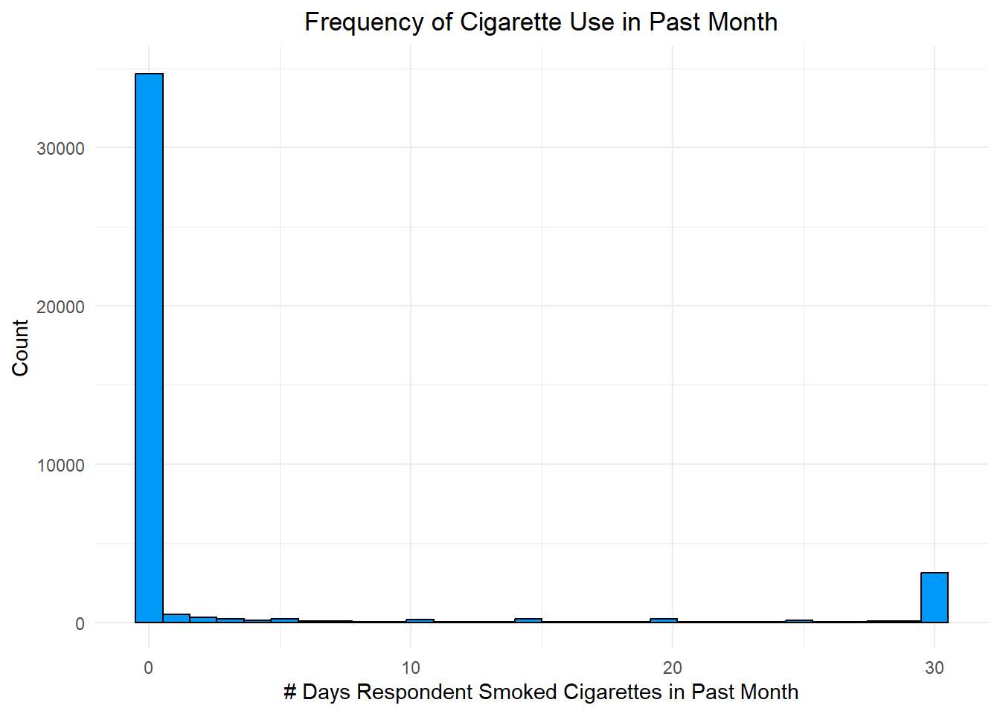
The mean number of days respondents smoked cigarettes in the past month was 2.9. The majority of respondents said they had not smoked any cigarettes in the past month, while the second most common response was 30 days.
nicdepend- nicotine dependence in past month based on criteria according to the Nicotine Dependence Syndrome Scale and the Fagerstrom Test of Nicotine Dependence -
Values
0 = No
1 = Yes
nicdepend_tab <- new_df %>%
tabyl(nicdepend2) %>%
filter(n != 0) %>%
mutate(percent = round(percent * 100, 1),
percent = paste0(percent, "%")) %>%
rename(Response = nicdepend2,
Count = n,
Percent = percent)
nicdepend<-flextable(nicdepend_tab)
nicdependResponse | Count | Percent |
|---|---|---|
No | 37,177 | 92% |
Yes | 3,212 | 8% |
nicdepend_count <- new_df %>%
dplyr::count(nicdepend2) %>%
dplyr::mutate(perc = n/sum(n) * 100)
nicdepend_count %>%
ggplot(aes(x = nicdepend2,
y = n,
fill = nicdepend2)) +
geom_bar(stat = "identity") +
scale_fill_manual(values = c("Yes" = "red",
"No" = "green")) +
geom_text(aes(x = nicdepend2, y = n,
label = paste0(n, " (", round(perc, 1),"%)"),
vjust = -0.5
)) +
theme_minimal() +
theme(legend.position = "none") +
theme(plot.title = element_text(hjust = 0.5)) +
scale_y_continuous(expand = expansion(mult = c(0,0.1))) +
labs(title = "Nicotine Dependence in Past Year",
x = "Nicotine Dependence",
y = "Count")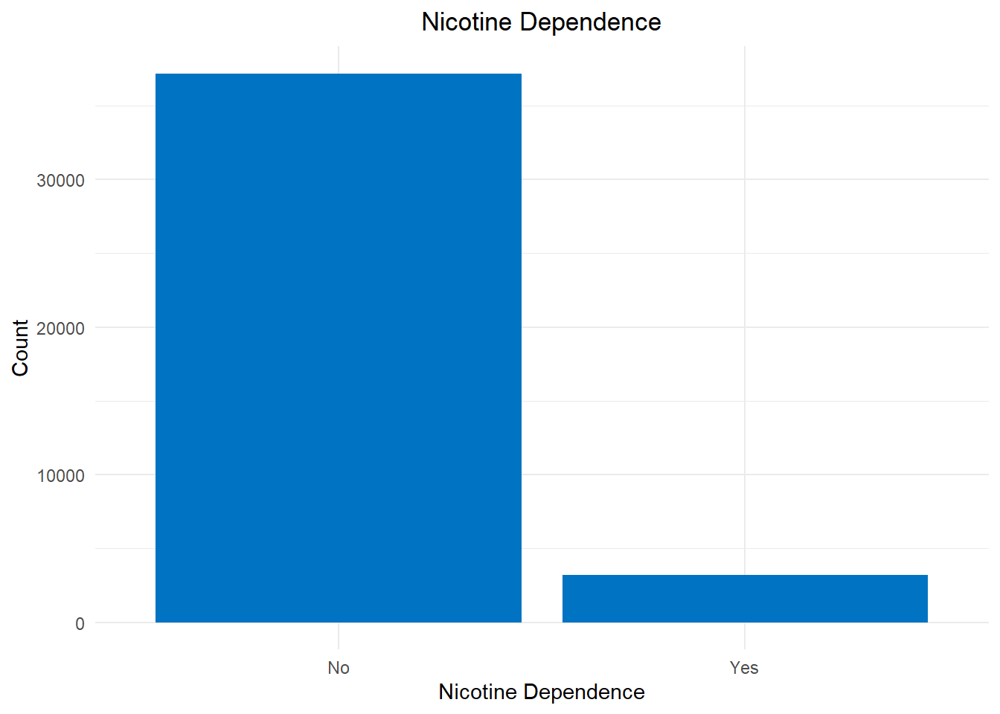
92% of respondents were not classified as having a dependence on nicotine, compared to 8% of respondents who were classified as having a dependence on nicotine.
alc30use- number of days respondent had at least one drink of alcohol in the past 30 days -
Values
- 0-30
ggplot(new_df, aes(x = alc30use)) +
geom_histogram(color = "#000000", fill = "#0099F8") +
xlab("# Days Respondent Drank Alcohol in Past Month") +
ylab("Count") +
labs(title = "Frequency of Alcohol Use in Past Month") +
theme_minimal() +
theme(plot.title = element_text(hjust = 0.5))`stat_bin()` using `bins = 30`. Pick better value with `binwidth`.
The mean number of days respondents had at least one in the past month was 4.1. The most frequent response was that respondents had not had any drinks in the past month.
- alcfreq- non-frequent (drank less than or equal to 4 days in past month) vs frequent (drank more than 4 days in past month) drinkers
- Values
- 0 = Non-Frequent Drinker
- 1 = Frequent Drinker
- Values
alcfreq_tab <- new_df %>%
tabyl(alcfreq2) %>%
filter(n != 0) %>%
mutate(percent = round(percent * 100, 1),
percent = paste0(percent, "%")) %>%
rename(Response = alcfreq2,
Count = n,
Percent = percent)
alcfreq<-flextable(alcfreq_tab)
alcfreqResponse | Count | Percent |
|---|---|---|
Frequent Drinker | 10,794 | 26.7% |
Non-Frequent Drinker | 29,595 | 73.3% |
alcfreq_count <- new_df %>%
dplyr::count(alcfreq2) %>%
dplyr::mutate(perc = n/sum(n) * 100)
alcfreq_count %>%
ggplot(aes(x = alcfreq2,
y = n,
fill = alcfreq2)) +
geom_bar(stat = "identity") +
scale_fill_manual(values = c("Frequent Drinker" = "red",
"Non-Frequent Drinker" = "green")) +
geom_text(aes(x = alcfreq2, y = n,
label = paste0(n, " (", round(perc, 1),"%)"),
vjust = -0.5
)) +
theme_minimal() +
theme(legend.position = "none") +
theme(plot.title = element_text(hjust = 0.5)) +
scale_y_continuous(expand = expansion(mult = c(0,0.1))) +
labs(title = "Frequency of Drinking in Past Month",
x = "Frequency of Drinking",
y = "Count")
73.3% of respondents drank less than 4 drinks in the past month and would be considered non-frequent drinkers, while 26.7% drank 4 or more drinks in the past month and would be considered frequent drinkers.
alcbinge30- number of days respondent had 4 or more drinks in the past 30 days -
Values
- 0-30
ggplot(new_df, aes(x = alcbinge30)) +
geom_histogram(color = "#000000", fill = "#0099F8") +
xlab("# Days Respondent Binged Alcohol in Past Month") +
ylab("Count") +
labs(title = "Frequency of Alcohol Binges (4+ Drinks) in Past Month") +
theme_minimal() +
theme(plot.title = element_text(hjust = 0.5))`stat_bin()` using `bins = 30`. Pick better value with `binwidth`.
The mean number of days a respondent had 4 or more drinks in the past 30 days was 1.1. The most frequent response from respondents was that they had not binge drank in the past month.
mj30use- number of days respondent used marijuana/cannabis in any form in the past 30 days - Values
- 0-30
ggplot(new_df, aes(x = mj30use)) +
geom_histogram(color = "#000000", fill = "#0099F8") +
xlab("# Days Respondent Used Marijuana in Past Month") +
ylab("Count") +
labs(title = "Frequency of Marijuana Use in Past Month") +
theme_minimal() +
theme(plot.title = element_text(hjust = 0.5))`stat_bin()` using `bins = 30`. Pick better value with `binwidth`.
The mean number of days a respondent used marijuana in the past 30 days was around 3.3. The most frequent response from respondents was that they had never used marijuana in the past month.
- mjfreq- non-frequent (used marijuana less than or equal to 4 days in past month) vs frequent (used marijuana more than 4 days in past month) marijuana user
- Values
- 0 = Non-Frequent Marijuana User
- 1 = Frequent Marijuana User
- Values
mjfreq_tab <- new_df %>%
tabyl(mjfreq2) %>%
filter(n != 0) %>%
mutate(percent = round(percent * 100, 1),
percent = paste0(percent, "%")) %>%
rename(Response = mjfreq2,
Count = n,
Percent = percent)
mjfreq<-flextable(mjfreq_tab)
mjfreqResponse | Count | Percent |
|---|---|---|
Frequent Marijuana User | 5,825 | 14.4% |
Non-Frequent Marijuana User | 34,564 | 85.6% |
mjfreq_count <- new_df %>%
dplyr::count(mjfreq2) %>%
dplyr::mutate(perc = n/sum(n) * 100)
mjfreq_count %>%
ggplot(aes(x = mjfreq2,
y = n,
fill = mjfreq2)) +
geom_bar(stat = "identity") +
scale_fill_manual(values = c("Frequent Marijuana User" = "red",
"Non-Frequent Marijuana User" = "green")) +
geom_text(aes(x = mjfreq2, y = n,
label = paste0(n, " (", round(perc, 1),"%)"),
vjust = -0.5
)) +
theme_minimal() +
theme(legend.position = "none") +
theme(plot.title = element_text(hjust = 0.5)) +
scale_y_continuous(expand = expansion(mult = c(0,0.1))) +
labs(title = "Frequency of Marijuana Use in Past Month",
x = "Frequency of Marijauna Use",
y = "Count")
85.6% of respondents used marijuana less than 4 times in the past month and would be considered non-frequent marijuana users, while 14.4% used marijuana 4 or more times in the past month and would be considered frequent marijuana users.
alcdisorder_year- whether respondents fits DSM-5 criteria for alcohol use disorder - Values
0 = No
1 = Yes
alcdisorder_tab <- new_df %>%
tabyl(alcdisorder_year2) %>%
filter(n != 0) %>%
mutate(percent = round(percent * 100, 1),
percent = paste0(percent, "%")) %>%
rename(Response = alcdisorder_year2,
Count = n,
Percent = percent)
alcdisorder<-flextable(alcdisorder_tab)
alcdisorderResponse | Count | Percent |
|---|---|---|
No | 35,277 | 87.3% |
Yes | 5,112 | 12.7% |
alcdisorder_count <- new_df %>%
dplyr::count(alcdisorder_year2) %>%
dplyr::mutate(perc = n/sum(n) * 100)
alcdisorder_count %>%
ggplot(aes(x = alcdisorder_year2,
y = n,
fill = alcdisorder_year2)) +
geom_bar(stat = "identity") +
scale_fill_manual(values = c("Yes" = "red",
"No" = "green")) +
geom_text(aes(x = alcdisorder_year2, y = n,
label = paste0(n, " (", round(perc, 1),"%)"),
vjust = -0.5
)) +
theme_minimal() +
theme(legend.position = "none") +
theme(plot.title = element_text(hjust = 0.5)) +
scale_y_continuous(expand = expansion(mult = c(0,0.1))) +
labs(title = "Alcohol Use Disorder in Past Year",
x = "Alcohol Use Disorder",
y = "Count")
87.3% of respondents did not meet the DSM-5 criteria for having alcohol use disorder in the past year. Only 12.7% of respondents did meet the criteria for alcohol use disorder.
mjdisorder_year- whether respondent fits criteria for marijuana use disorder - Values
0 = No
1 = Yes
mjdisorder_tab <- new_df %>%
tabyl(mjdisorder_year2) %>%
filter(n != 0) %>%
mutate(percent = round(percent * 100, 1),
percent = paste0(percent, "%")) %>%
rename(Response = mjdisorder_year2,
Count = n,
Percent = percent)
mjdisorder<-flextable(mjdisorder_tab)
mjdisorderResponse | Count | Percent |
|---|---|---|
No | 36,500 | 90.4% |
Yes | 3,889 | 9.6% |
mjdisorder_count <- new_df %>%
dplyr::count(mjdisorder_year2) %>%
dplyr::mutate(perc = n/sum(n) * 100)
mjdisorder_count %>%
ggplot(aes(x = mjdisorder_year2,
y = n,
fill = mjdisorder_year2)) +
geom_bar(stat = "identity") +
scale_fill_manual(values = c("Yes" = "red",
"No" = "green")) +
geom_text(aes(x = mjdisorder_year2, y = n,
label = paste0(n, " (", round(perc, 1),"%)"),
vjust = -0.5
)) +
theme_minimal() +
theme(legend.position = "none") +
theme(plot.title = element_text(hjust = 0.5)) +
scale_y_continuous(expand = expansion(mult = c(0,0.1))) +
labs(title = "Marijuana Use Disorder in Past Year",
x = "Marijuana Use Disorder",
y = "Count")
90.4% of respondents did not meet the DSM-5 criteria for having marijuana use disorder in the past year. Only 9.6% of respondents did meet the criteria for marijuana use disorder.
psych_distress_30- past month serious psychological distress indicator (recoded based on answers to K6 questionnaire) - Values
0 = No
1 = Yes
psychdistress_tab <- new_df %>%
tabyl(psych_distress_30_2) %>%
filter(n != 0) %>%
mutate(percent = round(percent * 100, 1),
percent = paste0(percent, "%")) %>%
rename(Response = psych_distress_30_2,
Count = n,
Percent = percent)
psychdistress<-flextable(psychdistress_tab)
psychdistressResponse | Count | Percent |
|---|---|---|
No | 35,973 | 89.1% |
Yes | 4,416 | 10.9% |
psychdistress_count <- new_df %>%
dplyr::count(psych_distress_30_2) %>%
dplyr::mutate(perc = n/sum(n) * 100)
psychdistress_count %>%
ggplot(aes(x = psych_distress_30_2,
y = n,
fill = psych_distress_30_2)) +
geom_bar(stat = "identity") +
scale_fill_manual(values = c("Yes" = "red",
"No" = "green")) +
geom_text(aes(x = psych_distress_30_2, y = n,
label = paste0(n, " (", round(perc, 1),"%)"),
vjust = -0.5
)) +
theme_minimal() +
theme(legend.position = "none") +
theme(plot.title = element_text(hjust = 0.5)) +
scale_y_continuous(expand = expansion(mult = c(0,0.1))) +
labs(title = "Serious Psychological Distress in Past Month",
x = "Serious Psychological Distress",
y = "Count")
89.1% of respondents have not experienced serious psychological distress in the past 30 days, while 10.9% have.
suicide- recoded adult past year thoughts, plans, OR attempts of suicide - Values
0 = No
1 = Yes, one or more (thoughts, plans, attempts, or some combination)
suicide_tab <- new_df %>%
tabyl(suicide2) %>%
filter(n != 0) %>%
mutate(percent = round(percent * 100, 1),
percent = paste0(percent, "%")) %>%
rename(Response = suicide2,
Count = n,
Percent = percent)
suicide<-flextable(suicide_tab)
suicideResponse | Count | Percent |
|---|---|---|
No | 37,388 | 92.6% |
Yes | 3,001 | 7.4% |
suicide_count <- new_df %>%
dplyr::count(suicide2) %>%
dplyr::mutate(perc = n/sum(n) * 100)
suicide_count %>%
ggplot(aes(x = suicide2,
y = n,
fill = suicide2)) +
geom_bar(stat = "identity") +
scale_fill_manual(values = c("Yes" = "red",
"No" = "green")) +
geom_text(aes(x = suicide2, y = n,
label = paste0(n, " (", round(perc, 1),"%)"),
vjust = -0.5
)) +
theme_minimal() +
theme(legend.position = "none") +
theme(plot.title = element_text(hjust = 0.5)) +
scale_y_continuous(expand = expansion(mult = c(0,0.1))) +
labs(title = "Suicidal Thoughts, Plans, and/or Attempts in Past Year",
x = "Suicidal Thoughts, Plans, and/or Attempts",
y = "Count")
92.6% of respondents did not have suicidal thoughts, plans, and/or attempts in the past 30 days while 7.4% experienced at least one of these.
majordepressive_year- past year major depressive episode - Values
0 = No
1 = Yes
mde_tab <- new_df %>%
tabyl(majordepressive_year2) %>%
filter(n != 0) %>%
mutate(percent = round(percent * 100, 1),
percent = paste0(percent, "%")) %>%
rename(Response = majordepressive_year2,
Count = n,
Percent = percent)
mde<-flextable(mde_tab)
mdeResponse | Count | Percent |
|---|---|---|
No | 35,623 | 88.2% |
Yes | 4,766 | 11.8% |
mde_count <- new_df %>%
dplyr::count(majordepressive_year2) %>%
dplyr::mutate(perc = n/sum(n) * 100)
mde_count %>%
ggplot(aes(x = majordepressive_year2,
y = n,
fill = majordepressive_year2)) +
geom_bar(stat = "identity") +
scale_fill_manual(values = c("Yes" = "red",
"No" = "green")) +
geom_text(aes(x = majordepressive_year2, y = n,
label = paste0(n, " (", round(perc, 1),"%)"),
vjust = -0.5
)) +
theme_minimal() +
theme(legend.position = "none") +
theme(plot.title = element_text(hjust = 0.5)) +
scale_y_continuous(expand = expansion(mult = c(0,0.1))) +
labs(title = "Experienced Major Depressive Episode in Past Year",
x = "Major Depressive Episode",
y = "Count")
88.2% of respondents did not experience a major depressive episode in the past year, while 11.8% did experience a major depressive episode.
Exploring Relationships Within the Data
Nicotine Dependence by Sex, Age, and Sexual Orientation
Sex and Nicotine Dependence
sex_nicdepend_count <- new_df %>%
filter(nicdepend2 %in% c("Yes")) %>%
dplyr::count(sex2) %>%
dplyr::mutate(perc = n/sum(n) * 100)
sex_nicdepend_count %>%
ggplot(aes(x = sex2,
y = n,
fill = sex2)) +
geom_bar(stat = "identity") +
scale_fill_manual(values = c("Female" = "deeppink",
"Male" = "deepskyblue")) +
geom_text(aes(x = sex2, y = n,
label = paste0(n, " (", round(perc, 1),"%)"),
vjust = -0.5
)) +
theme_minimal() +
theme(legend.position = "none") +
theme(plot.title = element_text(hjust = 0.5)) +
scale_y_continuous(expand = expansion(mult = c(0,0.1))) +
labs(title = "Nicotine Dependence by Sex",
x = "Sex",
y = "Count")
Women make up 50.9% of those dependent on nicotine, while men make up 49.1%.
Age and Nicotine Dependence
age_nicdepend_count <- new_df %>%
filter(nicdepend2 %in% c("Yes")) %>%
dplyr::count(age2) %>%
dplyr::mutate(perc = n/sum(n) * 100)
age_nicdepend_count %>%
ggplot(aes(x = age2,
y = n,
fill = age2)) +
geom_bar(stat = "identity") +
scale_fill_manual(values = c("18-25" = "#BBFFBB",
"26-34" = "#86FF86",
"35-49" = "#50FF50",
"50-64" = "#00F100",
"65+" = "#00BB00")) +
geom_text(aes(x = age2, y = n,
label = paste0(n, " (", round(perc, 1),"%)"),
vjust = -0.5
)) +
theme_minimal() +
theme(legend.position = "none") +
theme(plot.title = element_text(hjust = 0.5)) +
scale_y_continuous(expand = expansion(mult = c(0,0.1))) +
labs(title = "Nicotine Dependence by Age",
x = "Age",
y = "Count")
People aged 35-49 were the most likely age group to have a nicotine dependence (39.4%), followed by people aged 26-34 (20.8%). The least likely age group to have a nicotine dependence was those 65 years and older (7.1%).
Sexual Orientation and Nicotine Dependence
Nicotine Dependence in Heterosexual People
heterosexual_nicdepend_count <- new_df %>%
filter(sex_orient2 %in% c("Heterosexual")) %>%
dplyr::count(nicdepend2) %>%
dplyr::mutate(perc = n/sum(n) * 100)
heterosexual_nicdepend_count %>%
ggplot(aes(x = nicdepend2,
y = n)) +
geom_col(fill = "darkgray") +
geom_text(aes(x = nicdepend2, y = n,
label = paste0(n, " (", round(perc, 1),"%)"),
vjust = -0.5
)) +
theme_minimal() +
theme(plot.title = element_text(hjust = 0.5)) +
scale_y_continuous(expand = expansion(mult = c(0,0.1))) +
labs(title = "Nicotine Dependence For Heterosexuals",
x = "Nicotine Dependence",
y = "Count")
Among heterosexual respondents, only 7.7% had a nicotine dependence in the past year compared to 92.3% that did not.
Nicotine Dependence in Bisexual People
bisexual_nicdepend_count <- new_df %>%
filter(sex_orient2 %in% c("Bisexual")) %>%
dplyr::count(nicdepend2) %>%
dplyr::mutate(perc = n/sum(n) * 100)
bisexual_nicdepend_count %>%
ggplot(aes(x = nicdepend2,
y = n)) +
geom_col(fill = "darkorchid") +
geom_text(aes(x = nicdepend2, y = n,
label = paste0(n, " (", round(perc, 1),"%)"),
vjust = -0.5
)) +
theme_minimal() +
theme(plot.title = element_text(hjust = 0.5)) +
scale_y_continuous(expand = expansion(mult = c(0,0.1))) +
labs(title = "Nicotine Dependence For Bisexuals",
x = "Nicotine Dependence",
y = "Count")
Among bisexual respondents, only 11.7% had a nicotine dependence in the past year compared to 88.3% that did not.
Nicotine Dependence in Gay/Lesbian People
lg_nicdepend_count <- new_df %>%
filter(sex_orient2 %in% c("Gay/Lesbian")) %>%
dplyr::count(nicdepend2) %>%
dplyr::mutate(perc = n/sum(n) * 100)
lg_nicdepend_count %>%
ggplot(aes(x = nicdepend2,
y = n)) +
geom_col(fill = "deeppink3") +
geom_text(aes(x = nicdepend2, y = n,
label = paste0(n, " (", round(perc, 1),"%)"),
vjust = -0.5
)) +
theme_minimal() +
theme(plot.title = element_text(hjust = 0.5)) +
scale_y_continuous(expand = expansion(mult = c(0,0.1))) +
labs(title = "Nicotine Dependence For Gays/Lesbians",
x = "Nicotine Dependence",
y = "Count")
Among gay and lesbian respondents, only 9.1% had a nicotine dependence in the past year compared to 90.1% that did not.
Alcohol Use Disorder by Sex, Age, and Sexual Orientation
Sex and Alcohol Use Disorder
sex_alcdisorder_count <- new_df %>%
filter(alcdisorder_year2 %in% c("Yes")) %>%
dplyr::count(sex2) %>%
dplyr::mutate(perc = n/sum(n) * 100)
sex_alcdisorder_count %>%
ggplot(aes(x = sex2,
y = n,
fill = sex2)) +
geom_bar(stat = "identity") +
scale_fill_manual(values = c("Female" = "deeppink",
"Male" = "deepskyblue")) +
geom_text(aes(x = sex2, y = n,
label = paste0(n, " (", round(perc, 1),"%)"),
vjust = -0.5
)) +
theme_minimal() +
theme(legend.position = "none") +
theme(plot.title = element_text(hjust = 0.5)) +
scale_y_continuous(expand = expansion(mult = c(0,0.1))) +
labs(title = "Alcohol Use Disorder by Sex",
x = "Sex",
y = "Count")
Women make up 51.4% of those with an alcohol use disorder, while men make up 48.6%.
Age and Alcohol Use Disorder
age_alcdisorder_count <- new_df %>%
filter(alcdisorder_year2 %in% c("Yes")) %>%
dplyr::count(age2) %>%
dplyr::mutate(perc = n/sum(n) * 100)
age_alcdisorder_count %>%
ggplot(aes(x = age2,
y = n,
fill = age2)) +
geom_bar(stat = "identity") +
scale_fill_manual(values = c("18-25" = "#BBFFBB",
"26-34" = "#86FF86",
"35-49" = "#50FF50",
"50-64" = "#00F100",
"65+" = "#00BB00")) +
geom_text(aes(x = age2, y = n,
label = paste0(n, " (", round(perc, 1),"%)"),
vjust = -0.5
)) +
theme_minimal() +
theme(legend.position = "none") +
theme(plot.title = element_text(hjust = 0.5)) +
scale_y_continuous(expand = expansion(mult = c(0,0.1))) +
labs(title = "Alcohol Use Disorder by Age",
x = "Age",
y = "Count")
The 18-25 age category had the largest amount of people with an alcohol use disorder (35.2%), followed by the 35-49 (28.2%) and 26-34 (24.3%) age categories. The least likely age group to have an alcohol use disorder was those 65 years and older (4.4%).
Sexual Orientation and Alcohol Use Disorder
Alcohol Use Disorder in Heterosexual People
heterosexual_alcdisorder_count <- new_df %>%
filter(sex_orient2 %in% c("Heterosexual")) %>%
dplyr::count(alcdisorder_year2) %>%
dplyr::mutate(perc = n/sum(n) * 100)
heterosexual_alcdisorder_count %>%
ggplot(aes(x = alcdisorder_year2,
y = n)) +
geom_col(fill = "darkgray") +
geom_text(aes(x = alcdisorder_year2, y = n,
label = paste0(n, " (", round(perc, 1),"%)"),
vjust = -0.5
)) +
theme_minimal() +
theme(plot.title = element_text(hjust = 0.5)) +
scale_y_continuous(expand = expansion(mult = c(0,0.1))) +
labs(title = "Alcohol Use Disorder For Heterosexuals",
x = "Alcohol Use Disorder",
y = "Count")
Among heterosexual respondents, only 11.9% had an alcohol use disorder in the past year compared to 88.1% that did not.
Alcohol Use Disorder in Bisexual People
bisexual_alcdisorder_count <- new_df %>%
filter(sex_orient2 %in% c("Bisexual")) %>%
dplyr::count(alcdisorder_year2) %>%
dplyr::mutate(perc = n/sum(n) * 100)
bisexual_alcdisorder_count %>%
ggplot(aes(x = alcdisorder_year2,
y = n)) +
geom_col(fill = "darkorchid") +
geom_text(aes(x = alcdisorder_year2, y = n,
label = paste0(n, " (", round(perc, 1),"%)"),
vjust = -0.5
)) +
theme_minimal() +
theme(plot.title = element_text(hjust = 0.5)) +
scale_y_continuous(expand = expansion(mult = c(0,0.1))) +
labs(title = "Alcohol Use Disorder For Bisexuals",
x = "Alcohol Use Disorder",
y = "Count")
Among bisexual respondents, only 19.4% had an alcohol use disorder in the past year compared to 80.6% that did not.
Alcohol Use Disorder in Gay/Lesbian People
lg_alcdisorder_count <- new_df %>%
filter(sex_orient2 %in% c("Gay/Lesbian")) %>%
dplyr::count(alcdisorder_year2) %>%
dplyr::mutate(perc = n/sum(n) * 100)
lg_alcdisorder_count %>%
ggplot(aes(x = alcdisorder_year2,
y = n)) +
geom_col(fill = "deeppink3") +
geom_text(aes(x = alcdisorder_year2, y = n,
label = paste0(n, " (", round(perc, 1),"%)"),
vjust = -0.5
)) +
theme_minimal() +
theme(plot.title = element_text(hjust = 0.5)) +
scale_y_continuous(expand = expansion(mult = c(0,0.1))) +
labs(title = "Alcohol Use Disorder For Gays/Lesbians",
x = "Alcohol Use Disorder",
y = "Count")
Among gay and lesbian respondents, only 17.1% had an alcohol use disorder in the past year compared to 82.9% that did not.
Marijuana Use Disorder by Sex, Age, and Sexual Orientation
Sex and Marijuana Use Disorder
sex_mjdisorder_count <- new_df %>%
filter(mjdisorder_year2 %in% c("Yes")) %>%
dplyr::count(sex2) %>%
dplyr::mutate(perc = n/sum(n) * 100)
sex_mjdisorder_count %>%
ggplot(aes(x = sex2,
y = n,
fill = sex2)) +
geom_bar(stat = "identity") +
scale_fill_manual(values = c("Female" = "deeppink",
"Male" = "deepskyblue")) +
geom_text(aes(x = sex2, y = n,
label = paste0(n, " (", round(perc, 1),"%)"),
vjust = -0.5
)) +
theme_minimal() +
theme(legend.position = "none") +
theme(plot.title = element_text(hjust = 0.5)) +
scale_y_continuous(expand = expansion(mult = c(0,0.1))) +
labs(title = "Marijuana Use Disorder by Sex",
x = "Sex",
y = "Count")
Women make up 53.2% of those with a marijuana use disorder, while men make up 46.8%.
Age and Marijuana Use Disorder
age_mjdisorder_count <- new_df %>%
filter(mjdisorder_year2 %in% c("Yes")) %>%
dplyr::count(age2) %>%
dplyr::mutate(perc = n/sum(n) * 100)
age_mjdisorder_count %>%
ggplot(aes(x = age2,
y = n,
fill = age2)) +
geom_bar(stat = "identity") +
scale_fill_manual(values = c("18-25" = "#BBFFBB",
"26-34" = "#86FF86",
"35-49" = "#50FF50",
"50-64" = "#00F100",
"65+" = "#00BB00")) +
geom_text(aes(x = age2, y = n,
label = paste0(n, " (", round(perc, 1),"%)"),
vjust = -0.5
)) +
theme_minimal() +
theme(legend.position = "none") +
theme(plot.title = element_text(hjust = 0.5)) +
scale_y_continuous(expand = expansion(mult = c(0,0.1))) +
labs(title = "Marijuana Use Disorder by Age",
x = "Age",
y = "Count")
The 18-25 age category had the largest amount of people with a marijuana use disorder (49.9%), followed by the 26-34 (23.7%) and 35-49 (20.9%) age categories. The least likely age group to have a marijuana use disorder was those 65 years and older (1.5%).
Sexual Orientation and Marijuana Use Disorder
Marijuana Use Disorder in Heterosexual People
heterosexual_mjdisorder_count <- new_df %>%
filter(sex_orient2 %in% c("Heterosexual")) %>%
dplyr::count(mjdisorder_year2) %>%
dplyr::mutate(perc = n/sum(n) * 100)
heterosexual_mjdisorder_count %>%
ggplot(aes(x = mjdisorder_year2,
y = n)) +
geom_col(fill = "darkgray") +
geom_text(aes(x = mjdisorder_year2, y = n,
label = paste0(n, " (", round(perc, 1),"%)"),
vjust = -0.5
)) +
theme_minimal() +
theme(plot.title = element_text(hjust = 0.5)) +
scale_y_continuous(expand = expansion(mult = c(0,0.1))) +
labs(title = "Marijuana Use Disorder For Heterosexuals",
x = "Marijuana Use Disorder",
y = "Count")
Among heterosexual respondents, only 7.8% had a marijuana use disorder in the past year compared to 92.2% that did not.
Marijuana Use Disorder in Bisexual People
bisexual_mjdisorder_count <- new_df %>%
filter(sex_orient2 %in% c("Bisexual")) %>%
dplyr::count(mjdisorder_year2) %>%
dplyr::mutate(perc = n/sum(n) * 100)
bisexual_mjdisorder_count %>%
ggplot(aes(x = mjdisorder_year2,
y = n)) +
geom_col(fill = "darkorchid") +
geom_text(aes(x = mjdisorder_year2, y = n,
label = paste0(n, " (", round(perc, 1),"%)"),
vjust = -0.5
)) +
theme_minimal() +
theme(plot.title = element_text(hjust = 0.5)) +
scale_y_continuous(expand = expansion(mult = c(0,0.1))) +
labs(title = "Marijuana Use Disorder For Bisexuals",
x = "Marijuana Use Disorder",
y = "Count")
Among bisexual respondents, only 23.6% had a marijuana use disorder in the past year compared to 76.4% that did not.
Marijuana Use Disorder in Gay/Lesbian People
lg_mjdisorder_count <- new_df %>%
filter(sex_orient2 %in% c("Gay/Lesbian")) %>%
dplyr::count(mjdisorder_year2) %>%
dplyr::mutate(perc = n/sum(n) * 100)
lg_mjdisorder_count %>%
ggplot(aes(x = mjdisorder_year2,
y = n)) +
geom_col(fill = "deeppink3") +
geom_text(aes(x = mjdisorder_year2, y = n,
label = paste0(n, " (", round(perc, 1),"%)"),
vjust = -0.5
)) +
theme_minimal() +
theme(plot.title = element_text(hjust = 0.5)) +
scale_y_continuous(expand = expansion(mult = c(0,0.1))) +
labs(title = "Marijuana Use Disorder For Gays/Lesbians",
x = "Marijuana Use Disorder",
y = "Count")
Among gay and lesbian respondents, only 16.2% had a marijuana use disorder in the past year compared to 83.8% that did not.
Psychological Distress by Sex, Age, and Sexual Orientation
Sex and Psychological Distress
sex_psychdistress_count <- new_df %>%
filter(psych_distress_30_2 %in% c("Yes")) %>%
dplyr::count(sex2) %>%
dplyr::mutate(perc = n/sum(n) * 100)
sex_psychdistress_count %>%
ggplot(aes(x = sex2,
y = n,
fill = sex2)) +
geom_bar(stat = "identity") +
scale_fill_manual(values = c("Female" = "deeppink",
"Male" = "deepskyblue")) +
geom_text(aes(x = sex2, y = n,
label = paste0(n, " (", round(perc, 1),"%)"),
vjust = -0.5
)) +
theme_minimal() +
theme(legend.position = "none") +
theme(plot.title = element_text(hjust = 0.5)) +
scale_y_continuous(expand = expansion(mult = c(0,0.1))) +
labs(title = "Psychological Distress in Past Month by Sex",
x = "Sex",
y = "Count")
Men were much more likely (63.1%) than women (36.9%) to have experienced severe psychological distress in the past month.
Age and Psychological Distress
age_psychdistress_count <- new_df %>%
filter(psych_distress_30_2 %in% c("Yes")) %>%
dplyr::count(age2) %>%
dplyr::mutate(perc = n/sum(n) * 100)
age_psychdistress_count %>%
ggplot(aes(x = age2,
y = n,
fill = age2)) +
geom_bar(stat = "identity") +
scale_fill_manual(values = c("18-25" = "#BBFFBB",
"26-34" = "#86FF86",
"35-49" = "#50FF50",
"50-64" = "#00F100",
"65+" = "#00BB00")) +
geom_text(aes(x = age2, y = n,
label = paste0(n, " (", round(perc, 1),"%)"),
vjust = -0.5
)) +
theme_minimal() +
theme(legend.position = "none") +
theme(plot.title = element_text(hjust = 0.5)) +
scale_y_continuous(expand = expansion(mult = c(0,0.1))) +
labs(title = "Recent Psychological Distress by Age",
x = "Age",
y = "Count")
The 18-25 age category was the most common to have experienced severe psychological distress in the past month (50.1%), followed by the 26-34 (23.6%)and 35-49 (20.1%) age categories. The least likely age group to have experienced severe psychological distress in the past month was those 65 years and older (1.9%).
Sexual Orientation and Psychological Distress
Psychological Distress in Heterosexual People
heterosexual_psychdistress_count <- new_df %>%
filter(sex_orient2 %in% c("Heterosexual")) %>%
dplyr::count(psych_distress_30_2) %>%
dplyr::mutate(perc = n/sum(n) * 100)
heterosexual_psychdistress_count %>%
ggplot(aes(x = psych_distress_30_2,
y = n)) +
geom_col(fill = "darkgray") +
geom_text(aes(x = psych_distress_30_2, y = n,
label = paste0(n, " (", round(perc, 1),"%)"),
vjust = -0.5
)) +
theme_minimal() +
theme(plot.title = element_text(hjust = 0.5)) +
scale_y_continuous(expand = expansion(mult = c(0,0.1))) +
labs(title = "Recent Psychological Distress For Heterosexuals",
x = "Experienced Psychological Distress in Past Month",
y = "Count")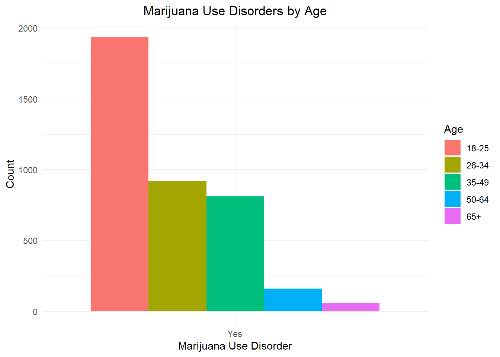
Among heterosexual respondents, only 8.2% experienced severe psychological distress in the past month compared to 91.8% that did not.
Psychological Distress in Bisexual People
bisexual_psychdistress_count <- new_df %>%
filter(sex_orient2 %in% c("Bisexual")) %>%
dplyr::count(psych_distress_30_2) %>%
dplyr::mutate(perc = n/sum(n) * 100)
bisexual_psychdistress_count %>%
ggplot(aes(x = psych_distress_30_2,
y = n)) +
geom_col(fill = "darkorchid") +
geom_text(aes(x = psych_distress_30_2, y = n,
label = paste0(n, " (", round(perc, 1),"%)"),
vjust = -0.5
)) +
theme_minimal() +
theme(plot.title = element_text(hjust = 0.5)) +
scale_y_continuous(expand = expansion(mult = c(0,0.1))) +
labs(title = "Recent Psychological Distress For Bisexuals",
x = "Experienced Psychological Distress in Past Month",
y = "Count")
Among bisexual respondents, only 28.6% experienced severe psychological distress in the past month compared to 71.4% that did not.
Psychological Distress in Gay/Lesbian People
lg_psychdistress_count <- new_df %>%
filter(sex_orient2 %in% c("Gay/Lesbian")) %>%
dplyr::count(psych_distress_30_2) %>%
dplyr::mutate(perc = n/sum(n) * 100)
lg_psychdistress_count %>%
ggplot(aes(x = psych_distress_30_2,
y = n)) +
geom_col(fill = "deeppink3") +
geom_text(aes(x = psych_distress_30_2, y = n,
label = paste0(n, " (", round(perc, 1),"%)"),
vjust = -0.5
)) +
theme_minimal() +
theme(plot.title = element_text(hjust = 0.5)) +
scale_y_continuous(expand = expansion(mult = c(0,0.1))) +
labs(title = "Recent Psychological Distress For Gays/Lesbians",
x = "Experienced Psychological Distress in Past Month",
y = "Count")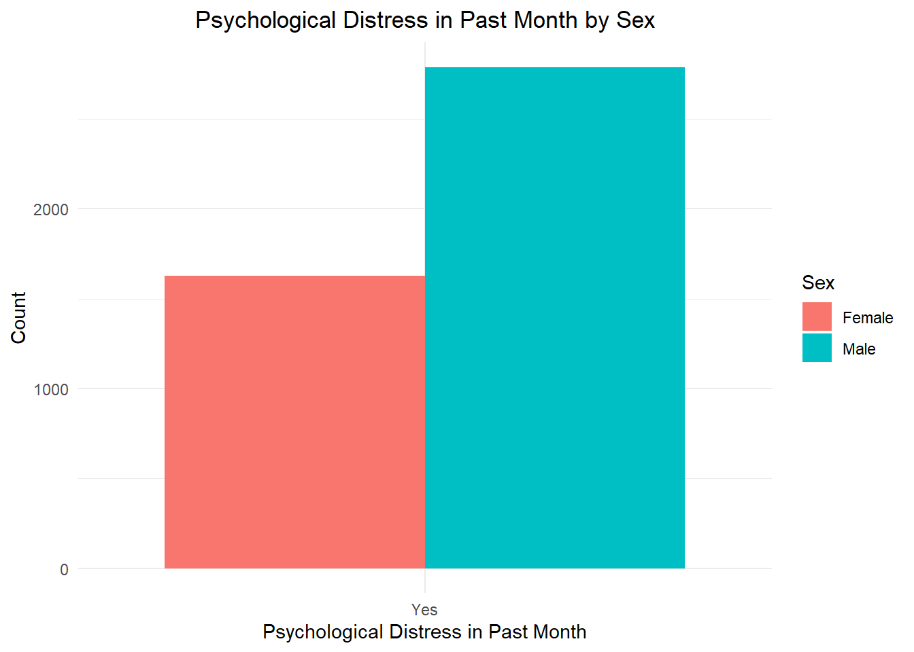
Among gay and lesbian respondents, only 19.6% experienced severe psychological distress in the past month compared to 80.4% that did not.
Suicidality by Sex, Age, and Sexual Orientation
Sex and Suicidality
sex_suicide_count <- new_df %>%
filter(suicide2 %in% c("Yes")) %>%
dplyr::count(sex2) %>%
dplyr::mutate(perc = n/sum(n) * 100)
sex_suicide_count %>%
ggplot(aes(x = sex2,
y = n,
fill = sex2)) +
geom_bar(stat = "identity") +
scale_fill_manual(values = c("Female" = "deeppink",
"Male" = "deepskyblue")) +
geom_text(aes(x = sex2, y = n,
label = paste0(n, " (", round(perc, 1),"%)"),
vjust = -0.5
)) +
theme_minimal() +
theme(legend.position = "none") +
theme(plot.title = element_text(hjust = 0.5)) +
scale_y_continuous(expand = expansion(mult = c(0,0.1))) +
labs(title = "Suicidal Thoughts, Plans, and/or Attempts in Past Year by Sex",
x = "Sex",
y = "Count")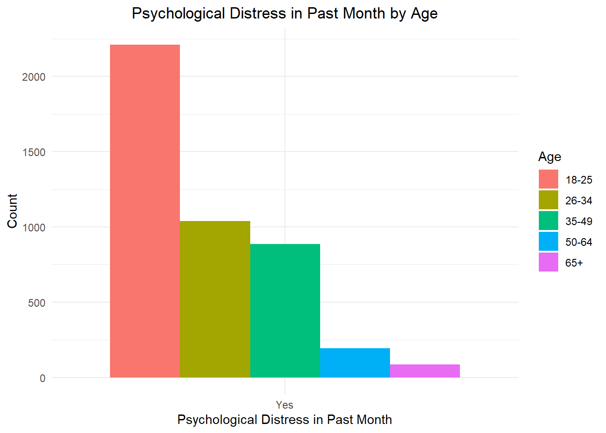
Men were more likely to experience suicidal thoughts, plans, and/or attempts in the past year (59.1%) compared to women (40.9%).
Age and Suicidality
age_suicide_count <- new_df %>%
filter(suicide2 %in% c("Yes")) %>%
dplyr::count(age2) %>%
dplyr::mutate(perc = n/sum(n) * 100)
age_suicide_count %>%
ggplot(aes(x = age2,
y = n,
fill = age2)) +
geom_bar(stat = "identity") +
scale_fill_manual(values = c("18-25" = "#BBFFBB",
"26-34" = "#86FF86",
"35-49" = "#50FF50",
"50-64" = "#00F100",
"65+" = "#00BB00")) +
geom_text(aes(x = age2, y = n,
label = paste0(n, " (", round(perc, 1),"%)"),
vjust = -0.5
)) +
theme_minimal() +
theme(legend.position = "none") +
theme(plot.title = element_text(hjust = 0.5)) +
scale_y_continuous(expand = expansion(mult = c(0,0.1))) +
labs(title = "Suicidal Thoughts, Plans, and/or Attempts in Past Year by Age",
x = "Age",
y = "Count")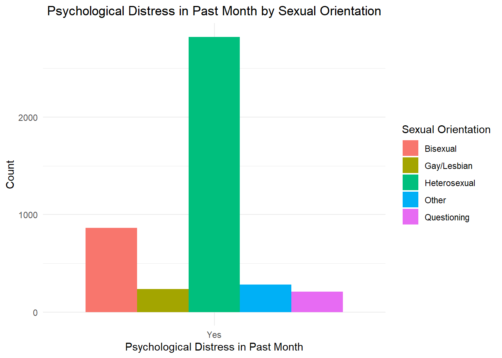
The 18-25 age category was the most common to have experienced suicidal thoughts, plans and/or attempts in the past year (52.3%), followed by the 26-34 (21.6%) and 35-49 (19.1%) age categories. The least likely age group to have experienced suicidality in the past year was those 65 years and older (2.6%).
Sexual Orientation and Suicidality
Suicidality in Heterosexual People
heterosexual_suicide_count <- new_df %>%
filter(sex_orient2 %in% c("Heterosexual")) %>%
dplyr::count(suicide2) %>%
dplyr::mutate(perc = n/sum(n) * 100)
heterosexual_suicide_count %>%
ggplot(aes(x = suicide2,
y = n)) +
geom_col(fill = "darkgray") +
geom_text(aes(x = suicide2, y = n,
label = paste0(n, " (", round(perc, 1),"%)"),
vjust = -0.5
)) +
theme_minimal() +
theme(plot.title = element_text(hjust = 0.5)) +
scale_y_continuous(expand = expansion(mult = c(0,0.1))) +
labs(title = "Suicidality in Past Year For Heterosexuals",
x = "Experienced Suicidal Thoughts, Plans, and/or Attempts in Past Year",
y = "Count")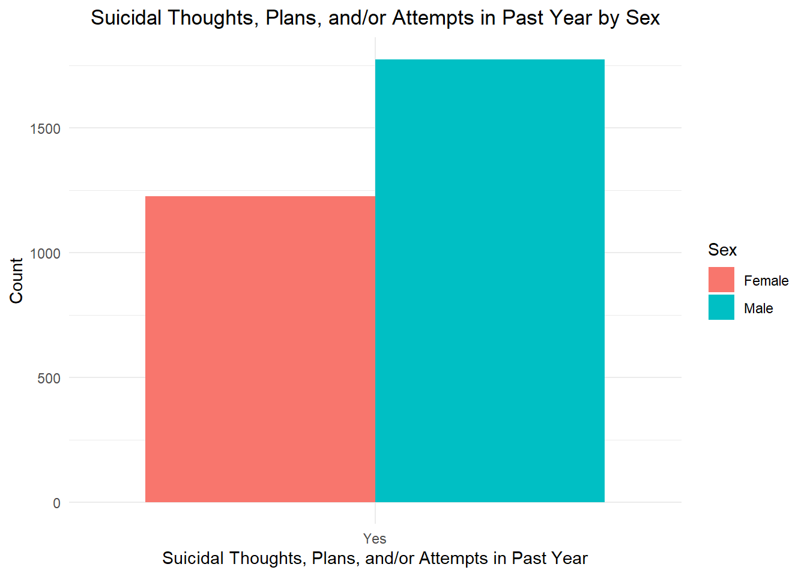
Among heterosexual respondents, only 5.2% experienced suicidal thoughts, plans, and/or attempts in the past year compared to 94.8% that did not.
Suicidality in Bisexual People
bisexual_suicide_count <- new_df %>%
filter(sex_orient2 %in% c("Bisexual")) %>%
dplyr::count(suicide2) %>%
dplyr::mutate(perc = n/sum(n) * 100)
bisexual_suicide_count %>%
ggplot(aes(x = suicide2,
y = n)) +
geom_col(fill = "darkorchid") +
geom_text(aes(x = suicide2, y = n,
label = paste0(n, " (", round(perc, 1),"%)"),
vjust = -0.5
)) +
theme_minimal() +
theme(plot.title = element_text(hjust = 0.5)) +
scale_y_continuous(expand = expansion(mult = c(0,0.1))) +
labs(title = "Suicidality in Past Year For Bisexuals",
x = "Experienced Suicidal Thoughts, Plans, and/or Attempts in Past Year",
y = "Count")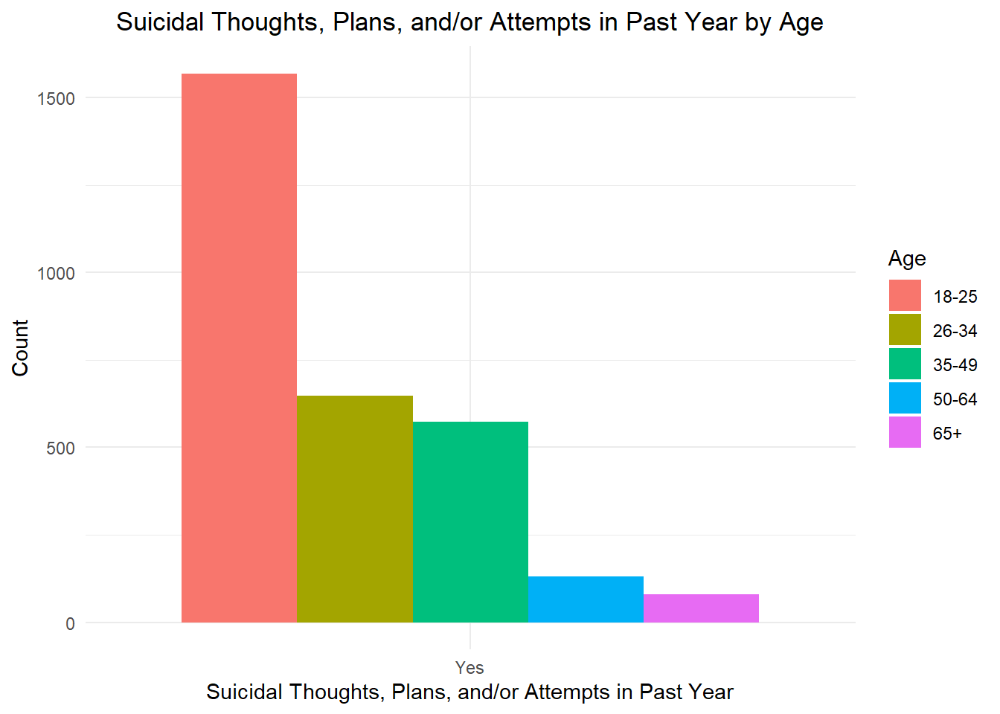
Among bisexual respondents, only 21.8% experienced suicidal thoughts, plans, and/or attempts in the past year compared to 78.2% that did not.
Suicidality in Gay/Lesbian People
lg_suicide_count <- new_df %>%
filter(sex_orient2 %in% c("Gay/Lesbian")) %>%
dplyr::count(suicide2) %>%
dplyr::mutate(perc = n/sum(n) * 100)
lg_suicide_count %>%
ggplot(aes(x = suicide2,
y = n)) +
geom_col(fill = "deeppink3") +
geom_text(aes(x = suicide2, y = n,
label = paste0(n, " (", round(perc, 1),"%)"),
vjust = -0.5
)) +
theme_minimal() +
theme(plot.title = element_text(hjust = 0.5)) +
scale_y_continuous(expand = expansion(mult = c(0,0.1))) +
labs(title = "Suicidality in Past Year For Gays/Lesbians",
x = "Experienced Suicidal Thoughts, Plans, and/or Attempts in Past Year",
y = "Count")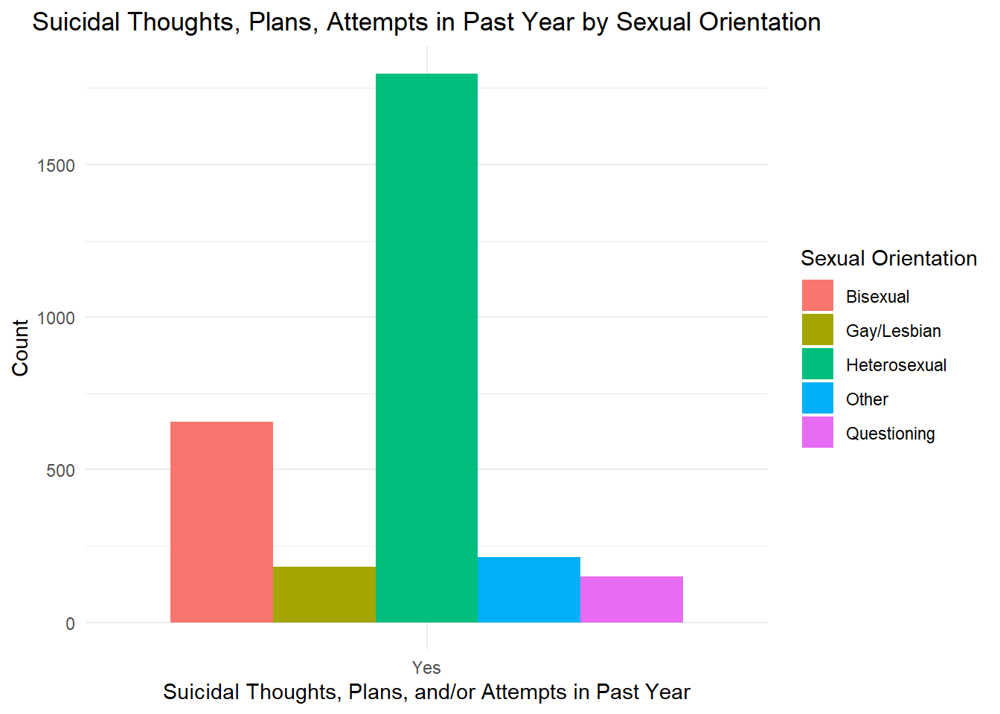
Among gay and lesbian respondents, only 15% experienced suicidal thoughts, plans, and/or attempts in the past year compared to 85% that did not.
Major Depressive Episode by Sex, Age, and Sexual Orientation
Sex and Major Depressive Episode
sex_mde_count <- new_df %>%
filter(majordepressive_year2 %in% c("Yes")) %>%
dplyr::count(sex2) %>%
dplyr::mutate(perc = n/sum(n) * 100)
sex_mde_count %>%
ggplot(aes(x = sex2,
y = n,
fill = sex2)) +
geom_bar(stat = "identity") +
scale_fill_manual(values = c("Female" = "deeppink",
"Male" = "deepskyblue")) +
geom_text(aes(x = sex2, y = n,
label = paste0(n, " (", round(perc, 1),"%)"),
vjust = -0.5
)) +
theme_minimal() +
theme(legend.position = "none") +
theme(plot.title = element_text(hjust = 0.5)) +
scale_y_continuous(expand = expansion(mult = c(0,0.1))) +
labs(title = "Major Depressive Episode in Past Year by Sex",
x = "Sex",
y = "Count")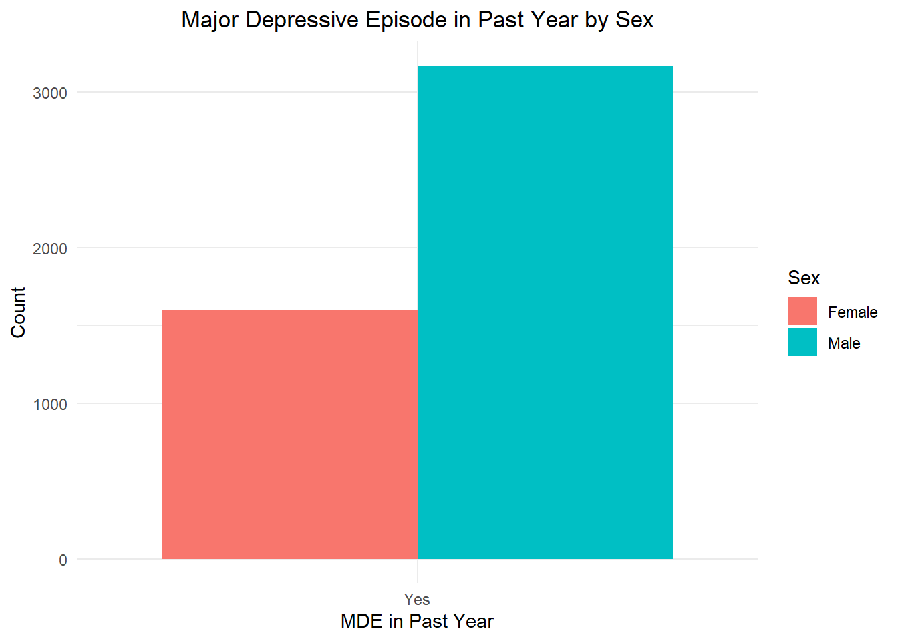
Men were much more likely (66.4%) than women (33.6%) to have experienced a major depressive episode in the past year.
Age and Major Depressive Episode
age_mde_count <- new_df %>%
filter(majordepressive_year2 %in% c("Yes")) %>%
dplyr::count(age2) %>%
dplyr::mutate(perc = n/sum(n) * 100)
age_mde_count %>%
ggplot(aes(x = age2,
y = n,
fill = age2)) +
geom_bar(stat = "identity") +
scale_fill_manual(values = c("18-25" = "#BBFFBB",
"26-34" = "#86FF86",
"35-49" = "#50FF50",
"50-64" = "#00F100",
"65+" = "#00BB00")) +
geom_text(aes(x = age2, y = n,
label = paste0(n, " (", round(perc, 1),"%)"),
vjust = -0.5
)) +
theme_minimal() +
theme(legend.position = "none") +
theme(plot.title = element_text(hjust = 0.5)) +
scale_y_continuous(expand = expansion(mult = c(0,0.1))) +
labs(title = "Major Depressive Episode in Past Year by Age",
x = "Age",
y = "Count")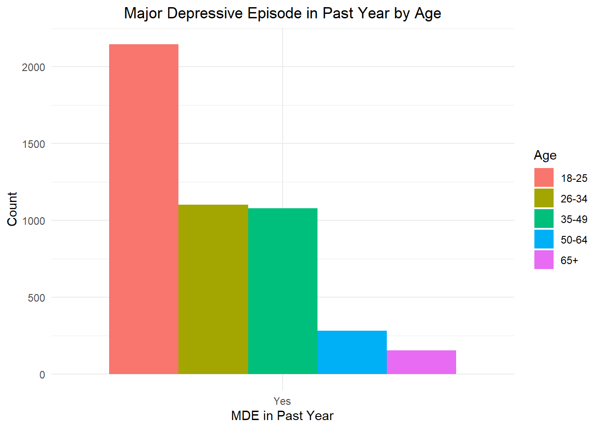
The 18-25 age category was the most common to have experienced a major depressive episode in the past year (45.1%), followed by the 26-34 (23.1%) and 35-49 (22.6%) age categories. The least likely age group to have experienced a major depressive episode in the past year was those 65 years and older (3.2%).
Sexual Orientation and Major Depressive Episode
Major Depressive Episodes in Heterosexual People
heterosexual_mde_count <- new_df %>%
filter(sex_orient2 %in% c("Heterosexual")) %>%
dplyr::count(majordepressive_year2) %>%
dplyr::mutate(perc = n/sum(n) * 100)
heterosexual_mde_count %>%
ggplot(aes(x = majordepressive_year2,
y = n)) +
geom_col(fill = "darkgray") +
geom_text(aes(x = majordepressive_year2, y = n,
label = paste0(n, " (", round(perc, 1),"%)"),
vjust = -0.5
)) +
theme_minimal() +
theme(plot.title = element_text(hjust = 0.5)) +
scale_y_continuous(expand = expansion(mult = c(0,0.1))) +
labs(title = "Major Depressive Episode in Past Year For Heterosexuals",
x = "Experienced Major Depressive Episode in Past Year",
y = "Count")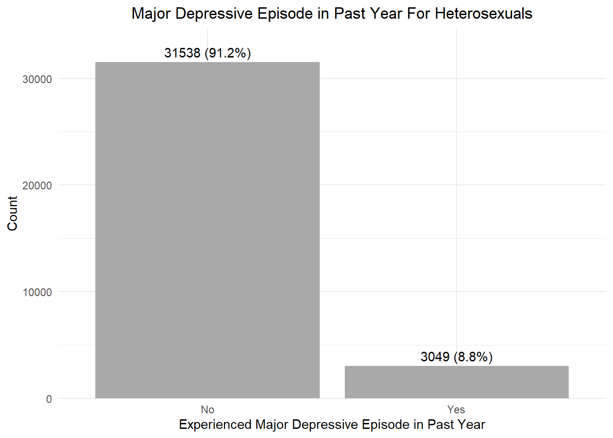
Among heterosexual respondents, only 8.8% experienced suicidal thoughts, plans, and/or attempts in the past year compared to 91.2% that did not.
Major Depressive Episodes in Bisexual People
bisexual_mde_count <- new_df %>%
filter(sex_orient2 %in% c("Bisexual")) %>%
dplyr::count(majordepressive_year2) %>%
dplyr::mutate(perc = n/sum(n) * 100)
bisexual_mde_count %>%
ggplot(aes(x = majordepressive_year2,
y = n)) +
geom_col(fill = "darkorchid") +
geom_text(aes(x = majordepressive_year2, y = n,
label = paste0(n, " (", round(perc, 1),"%)"),
vjust = -0.5
)) +
theme_minimal() +
theme(plot.title = element_text(hjust = 0.5)) +
scale_y_continuous(expand = expansion(mult = c(0,0.1))) +
labs(title = "Major Depressive Episode in Past Year For Bisexuals",
x = "Experienced Major Depressive Episode in Past Year",
y = "Count")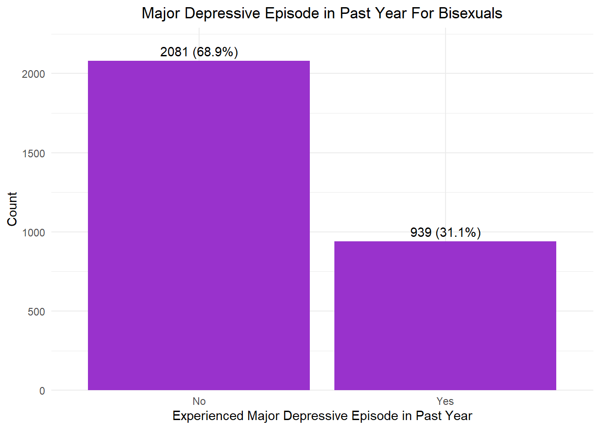
Among bisexual respondents, only 31.1% experienced suicidal thoughts, plans, and/or attempts in the past year compared to 68.9% that did not.
Major Depressive Episodes in Gay and Lesbian People
lg_mde_count <- new_df %>%
filter(sex_orient2 %in% c("Gay/Lesbian")) %>%
dplyr::count(majordepressive_year2) %>%
dplyr::mutate(perc = n/sum(n) * 100)
lg_mde_count %>%
ggplot(aes(x = majordepressive_year2,
y = n)) +
geom_col(fill = "deeppink3") +
geom_text(aes(x = majordepressive_year2, y = n,
label = paste0(n, " (", round(perc, 1),"%)"),
vjust = -0.5
)) +
theme_minimal() +
theme(plot.title = element_text(hjust = 0.5)) +
scale_y_continuous(expand = expansion(mult = c(0,0.1))) +
labs(title = "Major Depressive Episode in Past Year For Gays/Lesbians",
x = "Experienced Major Depressive Episode in Past Year",
y = "Count")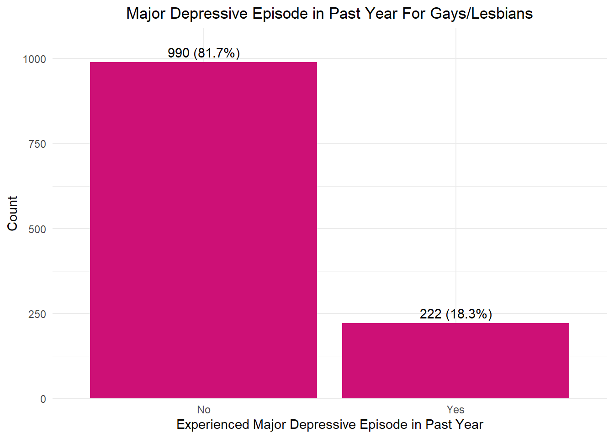
Among gay and lesbian respondents, only 18.3% experienced suicidal thoughts, plans, and/or attempts in the past year compared to 81.7% that did not.
Substance Use Disorders and Suicidality
Nicotine Dependence and Suicidality
tetrachoric(select(new_df, nicdepend, suicide))Call: tetrachoric(x = select(new_df, nicdepend, suicide))
tetrachoric correlation
ncdpn suicd
nicdepend 1.00
suicide 0.14 1.00
with tau of
nicdepend suicide
1.4 1.4 There is a very weak positive correlation (r = 0.14) between nicotine dependence and suicidal thoughts, plans, and/or attempts in the past year.
Alcohol Use Disorder and Suicidality
tetrachoric(select(new_df, alcdisorder_year, suicide))Call: tetrachoric(x = select(new_df, alcdisorder_year, suicide))
tetrachoric correlation
alcd_ suicd
alcdisorder_year 1.00
suicide 0.27 1.00
with tau of
alcdisorder_year suicide
1.1 1.4 There is a weak positive correlation (r = 0.27) between alcohol use disorder and suicidal thoughts, plans, and/or attempts in the past year.
Marijuana Use Disorder and Suicidality
tetrachoric(select(new_df, mjdisorder_year, suicide))Call: tetrachoric(x = select(new_df, mjdisorder_year, suicide))
tetrachoric correlation
mjds_ suicd
mjdisorder_year 1.00
suicide 0.38 1.00
with tau of
mjdisorder_year suicide
1.3 1.4 There is a weak positive correlation (r = 0.38) between marijuana use disorder and suicidal thoughts, plans, and/or attempts in the past year.
Substance Use Disorders and Major Depressive Episode
Nicotine Dependence and Major Depressive Episode
tetrachoric(select(new_df, nicdepend, majordepressive_year))Call: tetrachoric(x = select(new_df, nicdepend, majordepressive_year))
tetrachoric correlation
ncdpn mjrd_
nicdepend 1.00
majordepressive_year 0.12 1.00
with tau of
nicdepend majordepressive_year
1.4 1.2 There is a very weak positive correlation (r = 0.12) between nicotine dependence and having a major depressive episode in the past year.
Alcohol Use Disorder and Major Depressive Episode
tetrachoric(select(new_df, alcdisorder_year, majordepressive_year))Call: tetrachoric(x = select(new_df, alcdisorder_year, majordepressive_year))
tetrachoric correlation
alcd_ mjrd_
alcdisorder_year 1.00
majordepressive_year 0.26 1.00
with tau of
alcdisorder_year majordepressive_year
1.1 1.2 There is a weak positive correlation (r = 0.26) between alcohol use disorder and having a major depressive episode in the past year.
Marijuana Use Disorder and Major Depressive Episode
tetrachoric(select(new_df, mjdisorder_year, majordepressive_year))Call: tetrachoric(x = select(new_df, mjdisorder_year, majordepressive_year))
tetrachoric correlation
mjds_ mjrd_
mjdisorder_year 1.00
majordepressive_year 0.35 1.00
with tau of
mjdisorder_year majordepressive_year
1.3 1.2 There is a weak positive correlation (r = 0.35) between marijuana use disorder and having a major depressive episode in the past year.
Logistic Regression Models
Model 1
Hypothesis 1: LGB individuals who engage in regular substance use (alcohol and marijuana) in the past month are more likely to have experienced psychological distress in the past month compared to non-LGB individuals.
#predicted probability- predicting psychological distress based on LGB status
#using observed case approach
#logistic regression model with interaction
mod1 <- glm(psych_distress_30 ~ majordepressive_year + suicide + sex + age + sex_orient3 * (alc30use + cig30use + mj30use),
data = new_df,
family = binomial)
summary(mod1)
Call:
glm(formula = psych_distress_30 ~ majordepressive_year + suicide +
sex + age + sex_orient3 * (alc30use + cig30use + mj30use),
family = binomial, data = new_df)
Coefficients:
Estimate Std. Error z value Pr(>|z|)
(Intercept) -2.299072 0.087835 -26.175 < 2e-16 ***
majordepressive_year 2.071099 0.042069 49.231 < 2e-16 ***
suicide 1.696856 0.050109 33.863 < 2e-16 ***
sex 0.217536 0.040305 5.397 6.77e-08 ***
age -0.377132 0.018298 -20.611 < 2e-16 ***
sex_orient3 0.682788 0.057374 11.901 < 2e-16 ***
alc30use -0.003916 0.003412 -1.148 0.2511
cig30use 0.029071 0.002243 12.958 < 2e-16 ***
mj30use 0.022978 0.002306 9.963 < 2e-16 ***
sex_orient3:alc30use -0.015127 0.007037 -2.150 0.0316 *
sex_orient3:cig30use -0.010671 0.004678 -2.281 0.0226 *
sex_orient3:mj30use -0.019521 0.004150 -4.703 2.56e-06 ***
---
Signif. codes: 0 '***' 0.001 '**' 0.01 '*' 0.05 '.' 0.1 ' ' 1
(Dispersion parameter for binomial family taken to be 1)
Null deviance: 27879 on 40388 degrees of freedom
Residual deviance: 19608 on 40377 degrees of freedom
AIC: 19632
Number of Fisher Scoring iterations: 6#sex_orient3 = 0
#sexual orientation = non-LGB
new_df$sex_orient3 <- as.numeric(new_df$sex_orient3)
class(new_df$sex_orient3)[1] "labelled" "numeric" new_df$psych_distress_30 <- as.numeric(new_df$sex_orient3)
class(new_df$sex_orient3)[1] "labelled" "numeric" sexorient0 <- new_df %>%
dplyr::mutate(sex_orient3 = 0)
sexorient0 %>%
head(7) %>%
knitr::kable()| sex_orient | sex | age | cig30use | nicdepend | alc30use | alcbinge30 | mj30use | alcdisorder_year | mjdisorder_year | psych_distress_30 | suicide | majordepressive_year | sex_orient2 | sex_orient3 | sex_orient4 | sex2 | age2 | nicdepend2 | alcfreq | alcfreq2 | mjfreq | mjfreq2 | alcdisorder_year2 | mjdisorder_year2 | psych_distress_30_2 | suicide2 | majordepressive_year2 |
|---|---|---|---|---|---|---|---|---|---|---|---|---|---|---|---|---|---|---|---|---|---|---|---|---|---|---|---|
| 1 | 1 | 5 | 0 | 0 | 7 | 7 | 0 | 0 | 0 | 0 | 0 | 0 | Heterosexual | 0 | Non-LGB | Female | 50-64 | No | 1 | Frequent Drinker | 0 | Non-Frequent Marijuana User | No | No | No | No | No |
| 3 | 1 | 4 | 5 | 0 | 5 | 5 | 0 | 1 | 0 | 1 | 0 | 0 | Bisexual | 0 | LGB | Female | 35-49 | No | 1 | Frequent Drinker | 0 | Non-Frequent Marijuana User | Yes | No | No | No | No |
| 1 | 2 | 4 | 30 | 0 | 0 | 0 | 0 | 0 | 0 | 0 | 0 | 1 | Heterosexual | 0 | Non-LGB | Male | 35-49 | No | 0 | Non-Frequent Drinker | 0 | Non-Frequent Marijuana User | No | No | Yes | No | Yes |
| 1 | 1 | 5 | 0 | 0 | 3 | 0 | 0 | 0 | 0 | 0 | 0 | 0 | Heterosexual | 0 | Non-LGB | Female | 50-64 | No | 0 | Non-Frequent Drinker | 0 | Non-Frequent Marijuana User | No | No | No | No | No |
| 1 | 1 | 2 | 0 | 0 | 2 | 0 | 0 | 0 | 0 | 0 | 0 | 0 | Heterosexual | 0 | Non-LGB | Female | 18-25 | No | 0 | Non-Frequent Drinker | 0 | Non-Frequent Marijuana User | No | No | No | No | No |
| 1 | 1 | 3 | 0 | 0 | 15 | 1 | 25 | 1 | 1 | 0 | 0 | 0 | Heterosexual | 0 | Non-LGB | Female | 26-34 | No | 1 | Frequent Drinker | 1 | Frequent Marijuana User | Yes | Yes | No | No | No |
| 1 | 1 | 6 | 0 | 0 | 0 | 0 | 0 | 0 | 0 | 0 | 0 | 0 | Heterosexual | 0 | Non-LGB | Female | 65+ | No | 0 | Non-Frequent Drinker | 0 | Non-Frequent Marijuana User | No | No | No | No | No |
#sex_orient3 = 1
#sexual orientation = LGB
sexorient1 <- new_df %>%
dplyr::mutate(sex_orient3 = 1)
sexorient1 %>%
head(7) %>%
knitr::kable()| sex_orient | sex | age | cig30use | nicdepend | alc30use | alcbinge30 | mj30use | alcdisorder_year | mjdisorder_year | psych_distress_30 | suicide | majordepressive_year | sex_orient2 | sex_orient3 | sex_orient4 | sex2 | age2 | nicdepend2 | alcfreq | alcfreq2 | mjfreq | mjfreq2 | alcdisorder_year2 | mjdisorder_year2 | psych_distress_30_2 | suicide2 | majordepressive_year2 |
|---|---|---|---|---|---|---|---|---|---|---|---|---|---|---|---|---|---|---|---|---|---|---|---|---|---|---|---|
| 1 | 1 | 5 | 0 | 0 | 7 | 7 | 0 | 0 | 0 | 0 | 0 | 0 | Heterosexual | 1 | Non-LGB | Female | 50-64 | No | 1 | Frequent Drinker | 0 | Non-Frequent Marijuana User | No | No | No | No | No |
| 3 | 1 | 4 | 5 | 0 | 5 | 5 | 0 | 1 | 0 | 1 | 0 | 0 | Bisexual | 1 | LGB | Female | 35-49 | No | 1 | Frequent Drinker | 0 | Non-Frequent Marijuana User | Yes | No | No | No | No |
| 1 | 2 | 4 | 30 | 0 | 0 | 0 | 0 | 0 | 0 | 0 | 0 | 1 | Heterosexual | 1 | Non-LGB | Male | 35-49 | No | 0 | Non-Frequent Drinker | 0 | Non-Frequent Marijuana User | No | No | Yes | No | Yes |
| 1 | 1 | 5 | 0 | 0 | 3 | 0 | 0 | 0 | 0 | 0 | 0 | 0 | Heterosexual | 1 | Non-LGB | Female | 50-64 | No | 0 | Non-Frequent Drinker | 0 | Non-Frequent Marijuana User | No | No | No | No | No |
| 1 | 1 | 2 | 0 | 0 | 2 | 0 | 0 | 0 | 0 | 0 | 0 | 0 | Heterosexual | 1 | Non-LGB | Female | 18-25 | No | 0 | Non-Frequent Drinker | 0 | Non-Frequent Marijuana User | No | No | No | No | No |
| 1 | 1 | 3 | 0 | 0 | 15 | 1 | 25 | 1 | 1 | 0 | 0 | 0 | Heterosexual | 1 | Non-LGB | Female | 26-34 | No | 1 | Frequent Drinker | 1 | Frequent Marijuana User | Yes | Yes | No | No | No |
| 1 | 1 | 6 | 0 | 0 | 0 | 0 | 0 | 0 | 0 | 0 | 0 | 0 | Heterosexual | 1 | Non-LGB | Female | 65+ | No | 0 | Non-Frequent Drinker | 0 | Non-Frequent Marijuana User | No | No | No | No | No |
#calculating predicted probabilities
#sex_orient3 = 0
#sexual orientation = non-LGB
sexorient0 <- sexorient0 %>%
dplyr::mutate(pred_probs = predict(
mod1,
newdata = sexorient0,
type = "response"
))
sexorient0 %>%
head(7) %>%
knitr::kable()| sex_orient | sex | age | cig30use | nicdepend | alc30use | alcbinge30 | mj30use | alcdisorder_year | mjdisorder_year | psych_distress_30 | suicide | majordepressive_year | sex_orient2 | sex_orient3 | sex_orient4 | sex2 | age2 | nicdepend2 | alcfreq | alcfreq2 | mjfreq | mjfreq2 | alcdisorder_year2 | mjdisorder_year2 | psych_distress_30_2 | suicide2 | majordepressive_year2 | pred_probs |
|---|---|---|---|---|---|---|---|---|---|---|---|---|---|---|---|---|---|---|---|---|---|---|---|---|---|---|---|---|
| 1 | 1 | 5 | 0 | 0 | 7 | 7 | 0 | 0 | 0 | 0 | 0 | 0 | Heterosexual | 0 | Non-LGB | Female | 50-64 | No | 1 | Frequent Drinker | 0 | Non-Frequent Marijuana User | No | No | No | No | No | 0.0180818 |
| 3 | 1 | 4 | 5 | 0 | 5 | 5 | 0 | 1 | 0 | 1 | 0 | 0 | Bisexual | 0 | LGB | Female | 35-49 | No | 1 | Frequent Drinker | 0 | Non-Frequent Marijuana User | Yes | No | No | No | No | 0.0303457 |
| 1 | 2 | 4 | 30 | 0 | 0 | 0 | 0 | 0 | 0 | 0 | 0 | 1 | Heterosexual | 0 | Non-LGB | Male | 35-49 | No | 0 | Non-Frequent Drinker | 0 | Non-Frequent Marijuana User | No | No | Yes | No | Yes | 0.3942934 |
| 1 | 1 | 5 | 0 | 0 | 3 | 0 | 0 | 0 | 0 | 0 | 0 | 0 | Heterosexual | 0 | Non-LGB | Female | 50-64 | No | 0 | Non-Frequent Drinker | 0 | Non-Frequent Marijuana User | No | No | No | No | No | 0.0183620 |
| 1 | 1 | 2 | 0 | 0 | 2 | 0 | 0 | 0 | 0 | 0 | 0 | 0 | Heterosexual | 0 | Non-LGB | Female | 18-25 | No | 0 | Non-Frequent Drinker | 0 | Non-Frequent Marijuana User | No | No | No | No | No | 0.0550115 |
| 1 | 1 | 3 | 0 | 0 | 15 | 1 | 25 | 1 | 1 | 0 | 0 | 0 | Heterosexual | 0 | Non-LGB | Female | 26-34 | No | 1 | Frequent Drinker | 1 | Frequent Marijuana User | Yes | Yes | No | No | No | 0.0631381 |
| 1 | 1 | 6 | 0 | 0 | 0 | 0 | 0 | 0 | 0 | 0 | 0 | 0 | Heterosexual | 0 | Non-LGB | Female | 65+ | No | 0 | Non-Frequent Drinker | 0 | Non-Frequent Marijuana User | No | No | No | No | No | 0.0128139 |
#calculating predicted probabilities
#sex_orient3 = 1
#sexual orientation = LGB
sexorient1 <- sexorient1 %>%
dplyr::mutate(pred_probs = predict(
mod1,
newdata = sexorient1,
type = "response"
))
sexorient1 %>%
head(7) %>%
knitr::kable()| sex_orient | sex | age | cig30use | nicdepend | alc30use | alcbinge30 | mj30use | alcdisorder_year | mjdisorder_year | psych_distress_30 | suicide | majordepressive_year | sex_orient2 | sex_orient3 | sex_orient4 | sex2 | age2 | nicdepend2 | alcfreq | alcfreq2 | mjfreq | mjfreq2 | alcdisorder_year2 | mjdisorder_year2 | psych_distress_30_2 | suicide2 | majordepressive_year2 | pred_probs |
|---|---|---|---|---|---|---|---|---|---|---|---|---|---|---|---|---|---|---|---|---|---|---|---|---|---|---|---|---|
| 1 | 1 | 5 | 0 | 0 | 7 | 7 | 0 | 0 | 0 | 0 | 0 | 0 | Heterosexual | 1 | Non-LGB | Female | 50-64 | No | 1 | Frequent Drinker | 0 | Non-Frequent Marijuana User | No | No | No | No | No | 0.0317468 |
| 3 | 1 | 4 | 5 | 0 | 5 | 5 | 0 | 1 | 0 | 1 | 0 | 0 | Bisexual | 1 | LGB | Female | 35-49 | No | 1 | Frequent Drinker | 0 | Non-Frequent Marijuana User | Yes | No | No | No | No | 0.0516377 |
| 1 | 2 | 4 | 30 | 0 | 0 | 0 | 0 | 0 | 0 | 0 | 0 | 1 | Heterosexual | 1 | Non-LGB | Male | 35-49 | No | 0 | Non-Frequent Drinker | 0 | Non-Frequent Marijuana User | No | No | Yes | No | Yes | 0.4833476 |
| 1 | 1 | 5 | 0 | 0 | 3 | 0 | 0 | 0 | 0 | 0 | 0 | 0 | Heterosexual | 1 | Non-LGB | Female | 50-64 | No | 0 | Non-Frequent Drinker | 0 | Non-Frequent Marijuana User | No | No | No | No | No | 0.0341735 |
| 1 | 1 | 2 | 0 | 0 | 2 | 0 | 0 | 0 | 0 | 0 | 0 | 0 | Heterosexual | 1 | Non-LGB | Female | 18-25 | No | 0 | Non-Frequent Drinker | 0 | Non-Frequent Marijuana User | No | No | No | No | No | 0.1005529 |
| 1 | 1 | 3 | 0 | 0 | 15 | 1 | 25 | 1 | 1 | 0 | 0 | 0 | Heterosexual | 1 | Non-LGB | Female | 26-34 | No | 1 | Frequent Drinker | 1 | Frequent Marijuana User | Yes | Yes | No | No | No | 0.0612641 |
| 1 | 1 | 6 | 0 | 0 | 0 | 0 | 0 | 0 | 0 | 0 | 0 | 0 | Heterosexual | 1 | Non-LGB | Female | 65+ | No | 0 | Non-Frequent Drinker | 0 | Non-Frequent Marijuana User | No | No | No | No | No | 0.0250493 |
#average predicted probabilities
obs_case_lgb_pprobs <- list(sexorient0, sexorient1) %>%
purrr::map_dbl(~ mean(.x$pred_probs))
tibble::tibble(
'Sexual Orientation' = 0:1,
'Predicted Probability of Recent Psychological Distress' = obs_case_lgb_pprobs
) %>% knitr::kable()| Sexual Orientation | Predicted Probability of Recent Psychological Distress |
|---|---|
| 0 | 0.1019075 |
| 1 | 0.1386674 |
0.1389-0.1018[1] 0.0371(0.1389-0.1018)/0.1018[1] 0.3644401#predicted probabilities plot
#uses AVERAGE case approach- different than table above
plot(estimate_relation(mod1, by = "sex_orient3")) +
ggtitle("Predicted Value of Recent Psychological Distress by Sexual Orientation",
subtitle = "0 = Non-LGB, 1 = LGB") +
xlab("Sexual Orientation") +
ylab("Predicted Value of Recent Psychological Distress")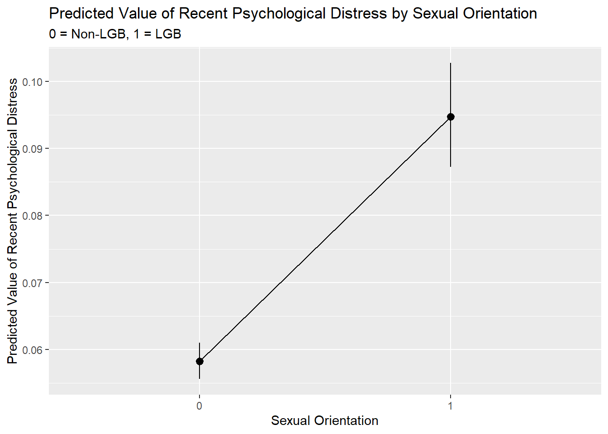
mod1tbl <- tbl_regression(mod1, exponentiate = TRUE) %>%
add_significance_stars(pattern = "{p.value}{stars}",
hide_ci = FALSE, hide_p = FALSE)
mod1tbl| Characteristic | OR | SE | 95% CI | p-value1 |
|---|---|---|---|---|
| Major Depressive Episode in Past Year | 7.93 | 0.042 | 7.31, 8.62 | <0.001*** |
| Suicidality in Past Year | 5.46 | 0.050 | 4.95, 6.02 | <0.001*** |
| Sex | 1.24 | 0.040 | 1.15, 1.35 | <0.001*** |
| Age Category | 0.69 | 0.018 | 0.66, 0.71 | <0.001*** |
| Sexual Orientation | 1.98 | 0.057 | 1.77, 2.21 | <0.001*** |
| # Days Drank Alcohol in Past Month | 1.00 | 0.003 | 0.99, 1.00 | 0.3 |
| # Days Used Cigarettes in Past Month | 1.03 | 0.002 | 1.02, 1.03 | <0.001*** |
| # Days Used Marijuana in Past Month | 1.02 | 0.002 | 1.02, 1.03 | <0.001*** |
| Sexual Orientation * # Days Drank Alcohol in Past Month | 0.98 | 0.007 | 0.97, 1.00 | 0.032* |
| Sexual Orientation * # Days Used Cigarettes in Past Month | 0.99 | 0.005 | 0.98, 1.00 | 0.023* |
| Sexual Orientation * # Days Used Marijuana in Past Month | 0.98 | 0.004 | 0.97, 0.99 | <0.001*** |
| Abbreviations: CI = Confidence Interval, OR = Odds Ratio, SE = Standard Error | ||||
| 1 *p<0.05; **p<0.01; ***p<0.001 | ||||
This model shows that individuals who have experienced a major depressive episode in the past year are nearly 8 times as likely to have experienced severe psychological distress in the past month compared to individuals without such a history (p < 0.001). Individuals who have had suicidal thoughts, plans, and/or attempts in the past year are around 5.5 times more likely to have experienced psychological distress in the past month compared to individuals without a history of suicidality (p < 0.001).
Men compared to women are around 1.25 times as likely to have experienced severe psychological distress in the past month (p < 0.001). Older individuals are less likely to experience psychological distress, with each higher age category being associated with around 31% lower odds of severe psychological distress taking place (p < 0.001).
This model shows that, on average, LGB individuals are almost twice as likely to experience psychological distress compared to non-LGB individuals (p < 0.001). The predicted probability using the observed case approach for LGB individuals to have experienced severe psychological distress is around 0.04 higher than non-LGB individuals. While this does not sound like a large number, this means that LGB people are 36.4% as likely to experience psychological distress compared to thier non-LGB counterparts, according to predicted probability estimates. This aligns with pre-existing research indicating more severe mental health struggles in LGBT populations.
Frequent cigarette smoking (p < 0.001) and marijuana use (p < 0.001) are positively associated with psychological distress, while frequent alcohol consumption is not significantly associated with psychological distress.
Hypothesis 1 is not supported with these results. The relationships between alcohol use and psychological distress (p < 0.05), cigarette use and psychological distress (p < 0.05), and marijuana use and psychological distress (p < 0.001) are all weaker for LGB individuals compared to non-LGB individuals. This is likely due to the fact that heterosexual/non-LGB people make up the vast majority of the sample.
Model 2
Hypothesis 2: LGB individuals who engage in regular substance use (alcohol, cigarette, and marijuana) are more likely to report experiencing a past year major depressive episode compared to non-LGB individuals.
#predicted probability- predicting major depressive episodes based on LGB status
#using observed case approach
#logistic regression model with interaction
mod2 <- glm(majordepressive_year ~ suicide + age + sex + sex_orient3 * (alc30use + cig30use + mj30use),
data = new_df,
family = binomial)
summary(mod2)
Call:
glm(formula = majordepressive_year ~ suicide + age + sex + sex_orient3 *
(alc30use + cig30use + mj30use), family = binomial, data = new_df)
Coefficients:
Estimate Std. Error z value Pr(>|z|)
(Intercept) -2.7799563 0.0817588 -34.002 < 2e-16 ***
suicide 2.4659746 0.0441033 55.914 < 2e-16 ***
age -0.2307521 0.0154346 -14.950 < 2e-16 ***
sex 0.5281137 0.0369556 14.290 < 2e-16 ***
sex_orient3 0.9608923 0.0513552 18.711 < 2e-16 ***
alc30use 0.0001794 0.0030509 0.059 0.953120
cig30use 0.0138568 0.0022194 6.244 4.28e-10 ***
mj30use 0.0214443 0.0022127 9.691 < 2e-16 ***
sex_orient3:alc30use -0.0012342 0.0061218 -0.202 0.840217
sex_orient3:cig30use -0.0140989 0.0044491 -3.169 0.001530 **
sex_orient3:mj30use -0.0141230 0.0038128 -3.704 0.000212 ***
---
Signif. codes: 0 '***' 0.001 '**' 0.01 '*' 0.05 '.' 0.1 ' ' 1
(Dispersion parameter for binomial family taken to be 1)
Null deviance: 29316 on 40388 degrees of freedom
Residual deviance: 23629 on 40378 degrees of freedom
AIC: 23651
Number of Fisher Scoring iterations: 5#calculating predicted probabilities
#sex_orient3 = 0
#sexual orientation = non-LGB
sexorient0 <- sexorient0 %>%
dplyr::mutate(pred_probs = predict(
mod2,
newdata = sexorient0,
type = "response"
))
sexorient0 %>%
head(7) %>%
knitr::kable()| sex_orient | sex | age | cig30use | nicdepend | alc30use | alcbinge30 | mj30use | alcdisorder_year | mjdisorder_year | psych_distress_30 | suicide | majordepressive_year | sex_orient2 | sex_orient3 | sex_orient4 | sex2 | age2 | nicdepend2 | alcfreq | alcfreq2 | mjfreq | mjfreq2 | alcdisorder_year2 | mjdisorder_year2 | psych_distress_30_2 | suicide2 | majordepressive_year2 | pred_probs |
|---|---|---|---|---|---|---|---|---|---|---|---|---|---|---|---|---|---|---|---|---|---|---|---|---|---|---|---|---|
| 1 | 1 | 5 | 0 | 0 | 7 | 7 | 0 | 0 | 0 | 0 | 0 | 0 | Heterosexual | 0 | Non-LGB | Female | 50-64 | No | 1 | Frequent Drinker | 0 | Non-Frequent Marijuana User | No | No | No | No | No | 0.0321599 |
| 3 | 1 | 4 | 5 | 0 | 5 | 5 | 0 | 1 | 0 | 1 | 0 | 0 | Bisexual | 0 | LGB | Female | 35-49 | No | 1 | Frequent Drinker | 0 | Non-Frequent Marijuana User | Yes | No | No | No | No | 0.0429150 |
| 1 | 2 | 4 | 30 | 0 | 0 | 0 | 0 | 0 | 0 | 0 | 0 | 1 | Heterosexual | 0 | Non-LGB | Male | 35-49 | No | 0 | Non-Frequent Drinker | 0 | Non-Frequent Marijuana User | No | No | Yes | No | Yes | 0.0969980 |
| 1 | 1 | 5 | 0 | 0 | 3 | 0 | 0 | 0 | 0 | 0 | 0 | 0 | Heterosexual | 0 | Non-LGB | Female | 50-64 | No | 0 | Non-Frequent Drinker | 0 | Non-Frequent Marijuana User | No | No | No | No | No | 0.0321376 |
| 1 | 1 | 2 | 0 | 0 | 2 | 0 | 0 | 0 | 0 | 0 | 0 | 0 | Heterosexual | 0 | Non-LGB | Female | 18-25 | No | 0 | Non-Frequent Drinker | 0 | Non-Frequent Marijuana User | No | No | No | No | No | 0.0622113 |
| 1 | 1 | 3 | 0 | 0 | 15 | 1 | 25 | 1 | 1 | 0 | 0 | 0 | Heterosexual | 0 | Non-LGB | Female | 26-34 | No | 1 | Frequent Drinker | 1 | Frequent Marijuana User | Yes | Yes | No | No | No | 0.0827695 |
| 1 | 1 | 6 | 0 | 0 | 0 | 0 | 0 | 0 | 0 | 0 | 0 | 0 | Heterosexual | 0 | Non-LGB | Female | 65+ | No | 0 | Non-Frequent Drinker | 0 | Non-Frequent Marijuana User | No | No | No | No | No | 0.0256718 |
#calculating predicted probabilities
#sex_orient3 = 1
#sexual orientation = LGB
sexorient1 <- sexorient1 %>%
dplyr::mutate(pred_probs = predict(
mod2,
newdata = sexorient1,
type = "response"
))
sexorient1 %>%
head(7) %>%
knitr::kable()| sex_orient | sex | age | cig30use | nicdepend | alc30use | alcbinge30 | mj30use | alcdisorder_year | mjdisorder_year | psych_distress_30 | suicide | majordepressive_year | sex_orient2 | sex_orient3 | sex_orient4 | sex2 | age2 | nicdepend2 | alcfreq | alcfreq2 | mjfreq | mjfreq2 | alcdisorder_year2 | mjdisorder_year2 | psych_distress_30_2 | suicide2 | majordepressive_year2 | pred_probs |
|---|---|---|---|---|---|---|---|---|---|---|---|---|---|---|---|---|---|---|---|---|---|---|---|---|---|---|---|---|
| 1 | 1 | 5 | 0 | 0 | 7 | 7 | 0 | 0 | 0 | 0 | 0 | 0 | Heterosexual | 1 | Non-LGB | Female | 50-64 | No | 1 | Frequent Drinker | 0 | Non-Frequent Marijuana User | No | No | No | No | No | 0.0792855 |
| 3 | 1 | 4 | 5 | 0 | 5 | 5 | 0 | 1 | 0 | 1 | 0 | 0 | Bisexual | 1 | LGB | Female | 35-49 | No | 1 | Frequent Drinker | 0 | Non-Frequent Marijuana User | Yes | No | No | No | No | 0.0979296 |
| 1 | 2 | 4 | 30 | 0 | 0 | 0 | 0 | 0 | 0 | 0 | 0 | 1 | Heterosexual | 1 | Non-LGB | Male | 35-49 | No | 0 | Non-Frequent Drinker | 0 | Non-Frequent Marijuana User | No | No | Yes | No | Yes | 0.1553672 |
| 1 | 1 | 5 | 0 | 0 | 3 | 0 | 0 | 0 | 0 | 0 | 0 | 0 | Heterosexual | 1 | Non-LGB | Female | 50-64 | No | 0 | Non-Frequent Drinker | 0 | Non-Frequent Marijuana User | No | No | No | No | No | 0.0795941 |
| 1 | 1 | 2 | 0 | 0 | 2 | 0 | 0 | 0 | 0 | 0 | 0 | 0 | Heterosexual | 1 | Non-LGB | Female | 18-25 | No | 0 | Non-Frequent Drinker | 0 | Non-Frequent Marijuana User | No | No | No | No | No | 0.1474725 |
| 1 | 1 | 3 | 0 | 0 | 15 | 1 | 25 | 1 | 1 | 0 | 0 | 0 | Heterosexual | 1 | Non-LGB | Female | 26-34 | No | 1 | Frequent Drinker | 1 | Frequent Marijuana User | Yes | Yes | No | No | No | 0.1399150 |
| 1 | 1 | 6 | 0 | 0 | 0 | 0 | 0 | 0 | 0 | 0 | 0 | 0 | Heterosexual | 1 | Non-LGB | Female | 65+ | No | 0 | Non-Frequent Drinker | 0 | Non-Frequent Marijuana User | No | No | No | No | No | 0.0644369 |
#average predicted probabilities
obs_case_lgb_pprobs2 <- list(sexorient0, sexorient1) %>%
purrr::map_dbl(~ mean(.x$pred_probs))
tibble::tibble(
'Sexual Orientation' = 0:1,
'Predicted Probability of Major Depressive Episode in Past Year' = obs_case_lgb_pprobs2
) %>% knitr::kable()| Sexual Orientation | Predicted Probability of Major Depressive Episode in Past Year |
|---|---|
| 0 | 0.1025499 |
| 1 | 0.1881787 |
0.1882-0.1025[1] 0.0857(0.1882-0.1025)/0.1025[1] 0.8360976#predicted probabilities plot
#uses AVERAGE case approach- different than table above
plot(estimate_relation(mod2, by = "sex_orient3")) +
ggtitle("Predicted Value of Experiencing a MDE by Sexual Orientation",
subtitle = "0 = Non-LGB, 1 = LGB") +
xlab("Sexual Orientation") +
ylab("Predicted Value of Major Depressive Episode")
mod2tbl <- tbl_regression(mod2, exponentiate = TRUE) %>%
add_significance_stars(pattern = "{p.value}{stars}",
hide_ci = FALSE, hide_p = FALSE)
mod2tbl| Characteristic | OR | SE | 95% CI | p-value1 |
|---|---|---|---|---|
| Suicidality in Past Year | 11.8 | 0.044 | 10.8, 12.8 | <0.001*** |
| Age Category | 0.79 | 0.015 | 0.77, 0.82 | <0.001*** |
| Sex | 1.70 | 0.037 | 1.58, 1.82 | <0.001*** |
| Sexual Orientation | 2.61 | 0.051 | 2.36, 2.89 | <0.001*** |
| # Days Drank Alcohol in Past Month | 1.00 | 0.003 | 0.99, 1.01 | >0.9 |
| # Days Used Cigarettes in Past Month | 1.01 | 0.002 | 1.01, 1.02 | <0.001*** |
| # Days Used Marijuana in Past Month | 1.02 | 0.002 | 1.02, 1.03 | <0.001*** |
| Sexual Orientation * # Days Drank Alcohol in Past Month | 1.00 | 0.006 | 0.99, 1.01 | 0.8 |
| Sexual Orientation * # Days Used Cigarettes in Past Month | 0.99 | 0.004 | 0.98, 1.0 | 0.002** |
| Sexual Orientation * # Days Used Marijuana in Past Month | 0.99 | 0.004 | 0.98, 0.99 | <0.001*** |
| Abbreviations: CI = Confidence Interval, OR = Odds Ratio, SE = Standard Error | ||||
| 1 *p<0.05; **p<0.01; ***p<0.001 | ||||
This model shows that older individuals are less likely to experience major depressive episodes, with each higher age category associated with approximately 13% lower odds of a MDE (p < 0.001). Men compared to women are around 1.6 times as likely to have experienced a MDE in the past year (p < 0.001).
This model also shows that LGB individuals are around twice as likely to experience a major depressive episode compared to non-LGB individuals (p < 0.001). The predicted probability using the observed case approach for LGB individuals to have experienced a major depressive episode within the past year is around 0.085 higher than non-LGB individuals. While this does not sound like a large number, this means that LGB people are 83.6% more likely to experience major depressive episodes compared to their non-LGB counterparts, according to predicted probability estimates. Similarly to Model 1, these results align with pre-existing research showing that LGBT populations tend to struggle more with their mental health than non-LGBT populations.
The number of days respondents drank alcohol in the past month is not significantly associated with the likelihood of experiencing MDEs. Despite this, frequent cigarette use (p < 0.05) and marijuana use (p < 0.001) are both associated with a greater likelihood of having experienced a MDE in the past year.
Hypothesis 2 is not supported by these results. There is no significant difference between LGB and non-LGB individuals in terms of the relationship between alcohol use and a MDE. Cigarette use (p < 0.05) and marijuana use (p < 0.05) are also more weakly associated with MDEs for LGB individuals compared to non-LGB individuals. This is likely due to the fact that heterosexual/non-LGB people make up the vast majority of the sample.
Model 3
Hypothesis 3: LGB individuals who have had a substance use disorder in the past year are more likely to have experienced suicidal thoughts, plans, and/or attempts in the past year compared to non-LGB individuals.
#predicted probability- predicting major depressive episodes based on LGB status
#using observed case approach
#logistic regression model with interaction
mod3 <- glm(suicide ~ majordepressive_year + age + sex + (sex_orient3 * (alcdisorder_year + mjdisorder_year + nicdepend)),
data = new_df,
family = binomial)
summary(mod3)
Call:
glm(formula = suicide ~ majordepressive_year + age + sex + (sex_orient3 *
(alcdisorder_year + mjdisorder_year + nicdepend)), family = binomial,
data = new_df)
Coefficients:
Estimate Std. Error z value Pr(>|z|)
(Intercept) -2.38259 0.09950 -23.945 < 2e-16 ***
majordepressive_year 2.40888 0.04452 54.109 < 2e-16 ***
age -0.30627 0.02072 -14.780 < 2e-16 ***
sex -0.15555 0.04507 -3.451 0.000558 ***
sex_orient3 0.78910 0.06028 13.090 < 2e-16 ***
alcdisorder_year 0.47506 0.06506 7.301 2.85e-13 ***
mjdisorder_year 0.58009 0.07088 8.184 2.75e-16 ***
nicdepend 0.32088 0.08396 3.822 0.000133 ***
sex_orient3:alcdisorder_year -0.07597 0.11299 -0.672 0.501381
sex_orient3:mjdisorder_year 0.00835 0.11203 0.075 0.940585
sex_orient3:nicdepend 0.03985 0.14910 0.267 0.789259
---
Signif. codes: 0 '***' 0.001 '**' 0.01 '*' 0.05 '.' 0.1 ' ' 1
(Dispersion parameter for binomial family taken to be 1)
Null deviance: 21376 on 40388 degrees of freedom
Residual deviance: 16001 on 40378 degrees of freedom
AIC: 16023
Number of Fisher Scoring iterations: 6#calculating predicted probabilities
#sex_orient3 = 0
#sexual orientation = non-LGB
sexorient0 <- sexorient0 %>%
dplyr::mutate(pred_probs = predict(
mod3,
newdata = sexorient0,
type = "response"
))
sexorient0 %>%
head(7) %>%
knitr::kable()| sex_orient | sex | age | cig30use | nicdepend | alc30use | alcbinge30 | mj30use | alcdisorder_year | mjdisorder_year | psych_distress_30 | suicide | majordepressive_year | sex_orient2 | sex_orient3 | sex_orient4 | sex2 | age2 | nicdepend2 | alcfreq | alcfreq2 | mjfreq | mjfreq2 | alcdisorder_year2 | mjdisorder_year2 | psych_distress_30_2 | suicide2 | majordepressive_year2 | pred_probs |
|---|---|---|---|---|---|---|---|---|---|---|---|---|---|---|---|---|---|---|---|---|---|---|---|---|---|---|---|---|
| 1 | 1 | 5 | 0 | 0 | 7 | 7 | 0 | 0 | 0 | 0 | 0 | 0 | Heterosexual | 0 | Non-LGB | Female | 50-64 | No | 1 | Frequent Drinker | 0 | Non-Frequent Marijuana User | No | No | No | No | No | 0.0167993 |
| 3 | 1 | 4 | 5 | 0 | 5 | 5 | 0 | 1 | 0 | 1 | 0 | 0 | Bisexual | 0 | LGB | Female | 35-49 | No | 1 | Frequent Drinker | 0 | Non-Frequent Marijuana User | Yes | No | No | No | No | 0.0359799 |
| 1 | 2 | 4 | 30 | 0 | 0 | 0 | 0 | 0 | 0 | 0 | 0 | 1 | Heterosexual | 0 | Non-LGB | Male | 35-49 | No | 0 | Non-Frequent Drinker | 0 | Non-Frequent Marijuana User | No | No | Yes | No | Yes | 0.1809549 |
| 1 | 1 | 5 | 0 | 0 | 3 | 0 | 0 | 0 | 0 | 0 | 0 | 0 | Heterosexual | 0 | Non-LGB | Female | 50-64 | No | 0 | Non-Frequent Drinker | 0 | Non-Frequent Marijuana User | No | No | No | No | No | 0.0167993 |
| 1 | 1 | 2 | 0 | 0 | 2 | 0 | 0 | 0 | 0 | 0 | 0 | 0 | Heterosexual | 0 | Non-LGB | Female | 18-25 | No | 0 | Non-Frequent Drinker | 0 | Non-Frequent Marijuana User | No | No | No | No | No | 0.0410645 |
| 1 | 1 | 3 | 0 | 0 | 15 | 1 | 25 | 1 | 1 | 0 | 0 | 0 | Heterosexual | 0 | Non-LGB | Female | 26-34 | No | 1 | Frequent Drinker | 1 | Frequent Marijuana User | Yes | Yes | No | No | No | 0.0830360 |
| 1 | 1 | 6 | 0 | 0 | 0 | 0 | 0 | 0 | 0 | 0 | 0 | 0 | Heterosexual | 0 | Non-LGB | Female | 65+ | No | 0 | Non-Frequent Drinker | 0 | Non-Frequent Marijuana User | No | No | No | No | No | 0.0124225 |
#calculating predicted probabilities
#sex_orient3 = 1
#sexual orientation = LGB
sexorient1 <- sexorient1 %>%
dplyr::mutate(pred_probs = predict(
mod3,
newdata = sexorient1,
type = "response"
))
sexorient1 %>%
head(7) %>%
knitr::kable()| sex_orient | sex | age | cig30use | nicdepend | alc30use | alcbinge30 | mj30use | alcdisorder_year | mjdisorder_year | psych_distress_30 | suicide | majordepressive_year | sex_orient2 | sex_orient3 | sex_orient4 | sex2 | age2 | nicdepend2 | alcfreq | alcfreq2 | mjfreq | mjfreq2 | alcdisorder_year2 | mjdisorder_year2 | psych_distress_30_2 | suicide2 | majordepressive_year2 | pred_probs |
|---|---|---|---|---|---|---|---|---|---|---|---|---|---|---|---|---|---|---|---|---|---|---|---|---|---|---|---|---|
| 1 | 1 | 5 | 0 | 0 | 7 | 7 | 0 | 0 | 0 | 0 | 0 | 0 | Heterosexual | 1 | Non-LGB | Female | 50-64 | No | 1 | Frequent Drinker | 0 | Non-Frequent Marijuana User | No | No | No | No | No | 0.0362503 |
| 3 | 1 | 4 | 5 | 0 | 5 | 5 | 0 | 1 | 0 | 1 | 0 | 0 | Bisexual | 1 | LGB | Female | 35-49 | No | 1 | Frequent Drinker | 0 | Non-Frequent Marijuana User | Yes | No | No | No | No | 0.0707635 |
| 1 | 2 | 4 | 30 | 0 | 0 | 0 | 0 | 0 | 0 | 0 | 0 | 1 | Heterosexual | 1 | Non-LGB | Male | 35-49 | No | 0 | Non-Frequent Drinker | 0 | Non-Frequent Marijuana User | No | No | Yes | No | Yes | 0.3272178 |
| 1 | 1 | 5 | 0 | 0 | 3 | 0 | 0 | 0 | 0 | 0 | 0 | 0 | Heterosexual | 1 | Non-LGB | Female | 50-64 | No | 0 | Non-Frequent Drinker | 0 | Non-Frequent Marijuana User | No | No | No | No | No | 0.0362503 |
| 1 | 1 | 2 | 0 | 0 | 2 | 0 | 0 | 0 | 0 | 0 | 0 | 0 | Heterosexual | 1 | Non-LGB | Female | 18-25 | No | 0 | Non-Frequent Drinker | 0 | Non-Frequent Marijuana User | No | No | No | No | No | 0.0861494 |
| 1 | 1 | 3 | 0 | 0 | 15 | 1 | 25 | 1 | 1 | 0 | 0 | 0 | Heterosexual | 1 | Non-LGB | Female | 26-34 | No | 1 | Frequent Drinker | 1 | Frequent Marijuana User | Yes | Yes | No | No | No | 0.1570540 |
| 1 | 1 | 6 | 0 | 0 | 0 | 0 | 0 | 0 | 0 | 0 | 0 | 0 | Heterosexual | 1 | Non-LGB | Female | 65+ | No | 0 | Non-Frequent Drinker | 0 | Non-Frequent Marijuana User | No | No | No | No | No | 0.0269448 |
#average predicted probabilities
obs_case_lgb_pprobs3 <- list(sexorient0, sexorient1) %>%
purrr::map_dbl(~ mean(.x$pred_probs))
tibble::tibble(
'Sexual Orientation' = 0:1,
'Predicted Probability of Suicidality in Past Year' = obs_case_lgb_pprobs3
) %>% knitr::kable()| Sexual Orientation | Predicted Probability of Suicidality in Past Year |
|---|---|
| 0 | 0.0626081 |
| 1 | 0.1117090 |
0.1117-0.0626[1] 0.0491(0.1117-0.0626)/0.0626[1] 0.784345#predicted probabilities plot
#uses AVERAGE case approach- different than table above
plot(estimate_relation(mod3, by = "sex_orient3")) +
ggtitle("Predicted Values of Experiencing Suicidality by Sexual Orientation",
subtitle = "0 = Non-LGB, 1 = LGB") +
xlab("Sexual Orientation") +
ylab("Predicted Value of Suicidality")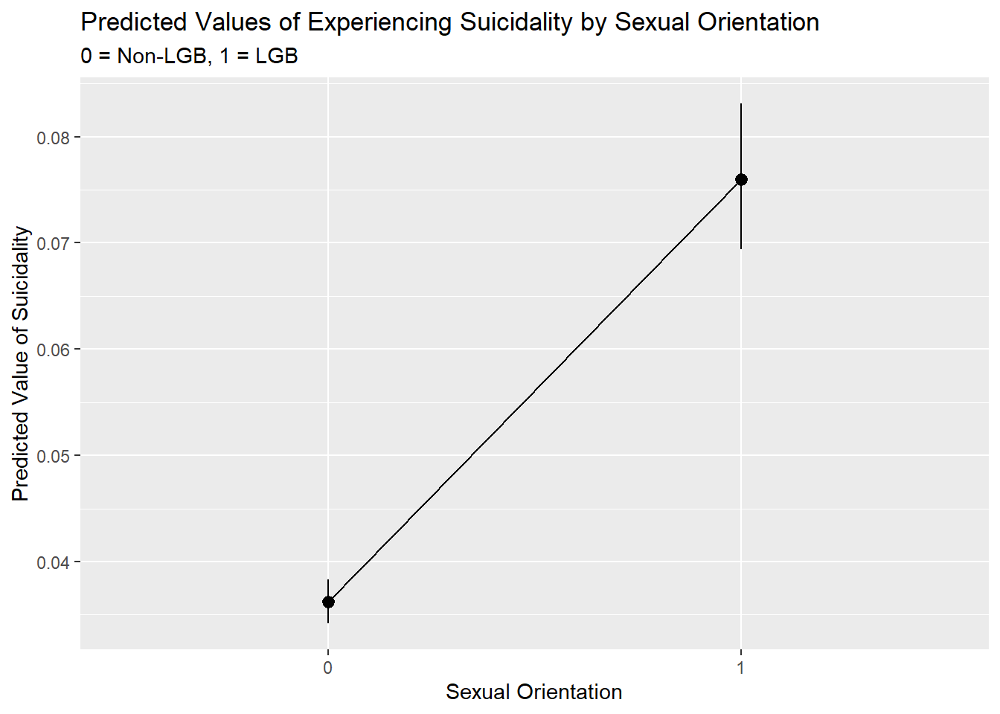
mod3tbl <- tbl_regression(mod3, exponentiate = TRUE) %>%
add_significance_stars(pattern = "{p.value}{stars}",
hide_ci = FALSE, hide_p = FALSE)
mod3tbl| Characteristic | OR | SE | 95% CI | p-value1 |
|---|---|---|---|---|
| Major Depressive Episode in Past Year | 11.1 | 0.045 | 10.2, 12.1 | <0.001*** |
| Age Category | 0.74 | 0.021 | 0.71, 0.77 | <0.001*** |
| Sex | 0.86 | 0.045 | 0.78, 0.94 | <0.001*** |
| Sexual Orientation | 2.20 | 0.060 | 1.96, 2.48 | <0.001*** |
| Alcohol Use Disorder | 1.61 | 0.065 | 1.41, 1.83 | <0.001*** |
| Marijuana Use Disorder | 1.79 | 0.071 | 1.55, 2.05 | <0.001*** |
| Nicotine Dependence | 1.38 | 0.084 | 1.17, 1.62 | <0.001*** |
| Sexual Orientation * Alcohol Use Disorder | 0.93 | 0.113 | 0.74, 1.16 | 0.5 |
| Sexual Orientation * Marijuana Use Disorder | 1.01 | 0.112 | 0.81, 1.26 | >0.9 |
| Sexual Orientation * Nicotine Dependence | 1.04 | 0.149 | 0.78, 1.39 | 0.8 |
| Abbreviations: CI = Confidence Interval, OR = Odds Ratio, SE = Standard Error | ||||
| 1 *p<0.05; **p<0.01; ***p<0.001 | ||||
This model shows that older individuals are significantly less likely to experience suicidal thoughts, plans or attempts, with each higher age category decreasing the risk of suicidality by around 21% (p < 0.001). Women are around 20% more likely to experience suicidal thoughts, plans or attempts than men (p < 0.001).
This model also shows that LGB individuals are approximately twice as likely to experience suicidal thoughts, plans or attempts than non-LGB individuals (p < 0.001). The predicted probability using the observed case approach for LGB individuals to have experienced suicidality in the past year is around 0.05 higher than non-LGB individuals. While this does not sound like a large number, this means that LGB people are 78.4% more likely to experience suicidality compared to their non-LGB counterparts, according to predicted probability estimates. Similarly to Models 1 and 2, these results also align with pre-existing research that has shown LGBT people tend to have poorer health outcomes than non-LGBT people.
Individuals who have either an alcohol use disorder (p < 0.001) or a marijuana use disorder (p < 0.001) are around 1.5 times as likely to also experience suicidal thoughts, plans or attempts. Nicotine dependence is not significantly associated with the likelihood of suicidality in this model.
Hypothesis 3 is not supported by this model. Individuals with substance use disorders do not significantly differ in their suicidality based on sexual orientation. This is likely due to the fact that heterosexual/non-LGB people make up the vast majority of the sample.
Diagnostics/Model Evaluation
Since binary variables are the only types of predictors utilized in these models, we do not need to check for a linearity assumption.
Model 1
Multicollinearity
#check multicollinearity with variance inflation factors (VIF)- should be below 5
vif(mod1)there are higher-order terms (interactions) in this model
consider setting type = 'predictor'; see ?vifmajordepressive_year suicide sex
1.081268 1.075413 1.059770
age sex_orient3 alc30use
1.108069 1.751848 1.361595
cig30use mj30use sex_orient3:alc30use
1.409340 1.589254 1.714337
sex_orient3:cig30use sex_orient3:mj30use
1.504844 1.975429 Since the Variance Inflation Factor is between 1 and 5 for each of the predictor variables, there is no multicollinearity detected in Model 1.
Pseudo R-Squared
#McFadden's R^2 - values closer to 1 mean better predictive power
pR2(mod1)fitting null model for pseudo-r2 llh llhNull G2 McFadden r2ML
-9.803889e+03 -1.393931e+04 8.270834e+03 2.966731e-01 1.851729e-01
r2CU
3.714225e-01 A McFadden’s R-squared value of 0.2967 indicates that Model 1 explains about 29.67% of the variation in the outcome variable.
Accuracy
#predict probabilities
pred_probs1 <- predict(mod1,
newdf1 = select(new_df, -psych_distress_30),
type = "response")
#convert probabilities to binary outcomes
pred_outcome1 <- ifelse(pred_probs1 > 0.5, 1, 0)
#transform predictions into factor
pred_outcome1 <- factor(pred_outcome1,
levels = c(0, 1))
#create confusion matrix
tab1 = table(new_df$psych_distress_30, pred_outcome1,
dnn = c("observed", "predicted"))
tab1 predicted
observed 0 1
0 33551 1036
1 4517 1285#calculate accuracy
(35171 + 1519) / (802 + 2897 + 35171 + 1519)[1] 0.9084157Model 1 has a predictive accuracy of 90.8%.
Sensitivity and Specificity
#sensitivity
sensitivity1 <- tab1[2, 2] / (tab1[2, 2] + tab1[2, 1])
sensitivity1[1] 0.2214754#specificity
specificity1 <- tab1[1, 1] / (tab1[1, 1] + tab1[1, 2])
specificity1[1] 0.9700465Model 1 has a higher specificity (97.8%) than sensitivity (34.4%), which means that it is good at identifying true negatives (those who have not experienced psychological distress) but it might misclassify true positives (those who have experienced psychological distress).
AUC/ROC Curve
#the closer the AUC to 1, the better the model fits!
roc1 <- roc(psych_distress_30 ~ fitted(mod1),
data = new_df)Setting levels: control = 0, case = 1Setting direction: controls < casesggroc(roc1, legacy.axes = TRUE) +
labs(title = paste0("AUC = ", round(roc1$auc, 2))) +
theme_minimal() +
theme(
panel.grid.major = element_line(color = "gray", size = 0.5),
panel.grid.minor = element_line(color = "gray", size = 0.25)
)Warning: The `size` argument of `element_line()` is deprecated as of ggplot2 3.4.0.
ℹ Please use the `linewidth` argument instead.
Model 1 has an AUC of 0.86, which indicates that it is fairly reliable and is performing very well in terms of distinguishing between those who have and have not experienced psychological distress in the past month.
Model 2
Multicollinearity
#check multicollinearity with variance inflation factors (VIF)- should be below 5
vif(mod2)there are higher-order terms (interactions) in this model
consider setting type = 'predictor'; see ?vif suicide age sex
1.028441 1.112811 1.049729
sex_orient3 alc30use cig30use
1.735147 1.383246 1.424417
mj30use sex_orient3:alc30use sex_orient3:cig30use
1.663329 1.754896 1.526616
sex_orient3:mj30use
2.029123 Since the Variance Inflation Factor is between 1 and 5 for each of the predictor variables, there is no multicollinearity detected in Model 2.
Pseudo R-Squared
#McFadden's R^2 - values closer to 1 mean better predictive power
pR2(mod2)fitting null model for pseudo-r2 llh llhNull G2 McFadden r2ML
-1.181471e+04 -1.465822e+04 5.687016e+03 1.939873e-01 1.313422e-01
r2CU
2.544959e-01 A McFadden’s R-squared value of 0.2704 indicates that Model 2 explains about 27.04% of the variation in the outcome variable.
Accuracy
#predict probabilities
pred_probs2 <- predict(mod2,
newdf2 = select(new_df, -majordepressive_year),
type = "response")
#convert probabilities to binary outcomes
pred_outcome2 <- ifelse(pred_probs2 > 0.5, 1, 0)
#transform predictions into factor
pred_outcome2 <- factor(pred_outcome2,
levels = c(0, 1))
#create confusion matrix
tab2 = table(new_df$majordepressive_year, pred_outcome2,
dnn = c("observed", "predicted"))
tab2 predicted
observed 0 1
0 34891 732
1 - Yes 3457 1309#calculate accuracy
(34865 + 1568) / (34865 + 3198 + 758 + 1568)[1] 0.9020525Model 2 has a predictive accuracy of 90.2%.
Sensitivity and Specificity
#sensitivity
sensitivity2 <- tab2[2, 2] / (tab2[2, 2] + tab2[2, 1])
sensitivity2[1] 0.2746538#specificity
specificity2 <- tab2[1, 1] / (tab2[1, 1] + tab2[1, 2])
specificity2[1] 0.9794515Model 2 has a higher specificity (97.9%) than sensitivity (32.9%), which means that it is good at identifying true negatives (those who have not experienced a major depressive episode) but it might misclassify true positives (those who have experienced a major depressive episode).
AUC/ROC Curve
#the closer the AUC to 1, the better the model fits!
roc2 <- roc(majordepressive_year ~ fitted(mod2),
data = new_df)Setting levels: control = 0, case = 1 - YesSetting direction: controls < casesggroc(roc2, legacy.axes = TRUE) +
labs(title = paste0("AUC = ", round(roc2$auc, 2))) +
theme_minimal() +
theme(
panel.grid.major = element_line(color = "gray", size = 0.5),
panel.grid.minor = element_line(color = "gray", size = 0.25)
)
Model 2 has an AUC of 0.83, which indicates that it is fairly reliable and is performing very well in terms of distinguishing between those who have and have not experienced a major depressive episode in the past year.
Model 3
Multicollinearity
#check multicollinearity with variance inflation factors (VIF)- should be below 5
vif(mod3)there are higher-order terms (interactions) in this model
consider setting type = 'predictor'; see ?vif majordepressive_year age
1.068113 1.109096
sex sex_orient3
1.078299 1.722982
alcdisorder_year mjdisorder_year
1.574370 1.817489
nicdepend sex_orient3:alcdisorder_year
1.523960 1.849423
sex_orient3:mjdisorder_year sex_orient3:nicdepend
2.166945 1.604724 Since the Variance Inflation Factor is between 1 and 5 for each of the predictor variables, there is no multicollinearity detected in Model 3.
Pseudo R-Squared
#McFadden's R^2 - values closer to 1 mean better predictive power
pR2(mod3)fitting null model for pseudo-r2 llh llhNull G2 McFadden r2ML
-8.000281e+03 -1.068808e+04 5.375590e+03 2.514760e-01 1.246184e-01
r2CU
3.032392e-01 A McFadden’s R-squared value of 0.3011 indicates that Model 3 explains about 30.11% of the variation in the outcome variable.
Accuracy
#predict probabilities
pred_probs3 <- predict(mod3,
newdf4 = select(new_df, -suicide),
type = "response")
#convert probabilities to binary outcomes
pred_outcome3 <- ifelse(pred_probs3 > 0.5, 1, 0)
#transform predictions into factor
pred_outcome3 <- factor(pred_outcome3,
levels = c(0, 1))
#create confusion matrix
tab3 = table(new_df$suicide, pred_outcome3,
dnn = c("observed", "predicted"))
tab3 predicted
observed 0 1
0 36954 434
1 - One or More 2464 537#calculate accuracy
(36683 + 904) / (36683 + 2097 + 705 + 904)[1] 0.9306247Model 3 has a predictive accuracy of 93.1%.
Sensitivity and Specificity
#sensitivity
sensitivity3 <- tab3[2, 2] / (tab3[2, 2] + tab3[2, 1])
sensitivity3[1] 0.1789404#specificity
specificity3 <- tab3[1, 1] / (tab3[1, 1] + tab3[1, 2])
specificity3[1] 0.988392Model 3 has a higher specificity (98.1%) than sensitivity (30.1%), which means that it is good at identifying true negatives (those who have not experienced suicidality) but it might misclassify true positives (those who have experienced suicidality).
AUC/ROC Curve
#the closer the AUC to 1, the better the model fits!
roc3 <- roc(suicide ~ fitted(mod3),
data = new_df)Setting levels: control = 0, case = 1 - One or MoreSetting direction: controls < casesggroc(roc3, legacy.axes = TRUE) +
labs(title = paste0("AUC = ", round(roc3$auc, 2))) +
theme_minimal() +
theme(
panel.grid.major = element_line(color = "gray", size = 0.5),
panel.grid.minor = element_line(color = "gray", size = 0.25)
)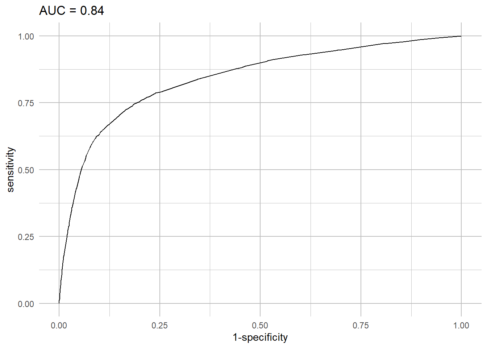
Model 3 has an AUC of 0.84, which indicates that it is fairly reliable and is performing very well in terms of distinguishing between those who have and have not experienced suicidality in the past year.
Discussion
Psychological Distress
Individuals who have experienced a major depressive episode (MDE) in the past year are nearly 8 times more likely to experience severe psychological distress in the past month. Those with suicidal plans, thoughts, or attempts are 5.5 times more likely to experience psychological distress. This is in line with prior research that has shown that major depressive episodes and suicidality can lead to greater psychological distress. Since depression and suicidality are both often characterized by feelings of hopelessness, worthlessness, and extreme sadness, it makes sense that these feelings would contribute to heightened distress. Men were also 1.25 times more likely to experience distress than women in this sample. We also found that older adults are much less likely to experience psychological distress compared to young adults, with each increasing age category being associated with around 31% lower odds of severe psychological distress taking place. Older adults have been shown in much previous research to be less likely to experience negative mental health compared to young adults (SAMHSA, 2021), which is in line with our results. LGB individuals are almost twice as likely to experience psychological distress compared to non-LGB individuals. This makes sense considering that LGB individuals tend to face higher rates of mental health challenges due to factors like social stigma and discrimination (King et al., 2008). Cigarette and marijuana use are both positively associated with psychological distress, but alcohol consumption is not significantly linked. In previous research, cigarette, marijuana, and alcohol use have all been linked to more negative mental health outcomes including psychological distress, major depressive episodes, and suicidality (Currie et al., 2005; Poorolajal & Darvishi, 2016; Shamabadi et al., 2023). While our results regarding cigarette and marijuana use were in line with this pre-existing research, our results actually showed that alcohol seemed to have a slightly protective factor, in that more frequent use was associated with a slightly lower risk of psychological distress.
Major Depressive Episodes (MDEs)
Older individuals are less likely to experience MDEs, with each higher age category reducing the odds by 13%. Men are 1.6 times more likely to experience a MDE than women, and LGB individuals are about twice as likely compared to non-LGB individuals to experience a MDE. Cigarette and marijuana use are linked to an increased likelihood of MDEs, while alcohol consumption does not have a significant association.
Suicidality
Older individuals are less likely to experience suicidality, with each higher age category reducing the risk by 21%. Women in our sample were 20% more likely to experience suicidality than men, which is in line with previous research showing that women are significantly more likely to report a past suicide attempt than men (Kelly et al., 2020). LGB individuals were twice as likely as non-LGB individuals to experience suicidal thoughts, plans, or attempts. People with alcohol and marijuana use disorders are 1.5 times more likely to experience suicidality, but nicotine dependence did not show a significant link.
Conclusion
The hypotheses surrounding the relationship between substance use (alcohol, cigarettes, and marijuana) and mental health outcomes for LGB individuals were not supported. Previous research has shown that there are links between LGBT people and substance use disorders, but that was not the case in this sample. There were some limitations in this study that may have caused this disparity. Since the study predominantly includes non-LGB individuals and LGB individuals only made up around 14.4% of the sample, it may not fully capture the unique mental health challenges faced by sexual minorities. In future research, it might be smart to focus on a sample consisting of equal parts LGBTQ+ and cisgender heterosexual individuals by oversampling LGBTQ+ people. Another issue with this study was that it did not include information on transgender or gender diverse individuals. Future studies should try to include this population in research, since they tend to experience even worse mental health outcomes than the lesbian, gay and bisexual populations due to facing even higher stigma and discrimination (Hajek et al., 2023).
Bibliography
Centers for Disease Control and Prevention. (2024, October 29). Suicide data and statistics. CDC Website. https://www.cdc.gov/suicide/facts/data.html.
Currie, S.R. et al. (2005). Comorbidity of major depression with substance use disorders. The Canadian Journal of Psychiatry, 50(10), 660-666. https://doi.org/10.1177/070674370505001013.
Hajek, A. et al. (2023). Prevalence and determinants of depressive and anxiety symptoms among transgender people: results of a survey. Healthcare, 11(705), 1-12. https://doi.org/10.3390/healthcare11050705.
Kelly, L.M., Rash, C.J., Alessi, S.M., & Zajac, K. (2020). Correlates and predictors of suicidal ideation and substance use among adults seeking substance use treatment with varying levels of suicidality. Journal of Substance Abuse and Addiction Treatment, 119, 1-29. https://doi.org/10.1016/j.jsat.2020.108145.
King, M. et al. (2008). A systematic review of mental disorder, suicide, and deliberate self-harm in lesbian, gay, and bisexual people. BMC Psychiatry 8(70), 1-17. https://doi.org/10.1186/1471-244X-8-70.
Piscopo, K. & Lipari, R.N. (2016). Suicidal thoughts and behavior among adults: results from the 2015 national survey on drug use and health. Substance Abuse and Mental Health Services Administration. https://www.samhsa.gov/data/sites/default/files/NSDUH-DR-FFR3-2015/NSDUH-DR-FFR3-2015.pdf.
Poorolajal, J. & Darvishi, N. (2016). Smoking and suicide: a meta-analysis. PLoS ONE 11(7), 1-18. https://doi.org/10.1371/journal.pone.0156348.
Shamabadi, A. et al. (2023). Suicidality risk after using cannabis and cannabinoids: an umbrella review. Dialogues in Clinical Neuroscience 25(1), 50-63. https://doi.org/10.1080/19585969.2023.2231466.
Substance Abuse and Mental Health Services Administration. (2021). Key substance use and mental health indicators in the United States: Results from the 2020 National Survey on Drug Use and Health (HHS Publication No. PEP21-07-01-003, NSDUH Series H-56). Rockville, MD: Center for Behavioral Health Statistics and Quality, Substance Abuse and Mental Health Services Administration. Retrieved from https://www.samhsa.gov/data/.